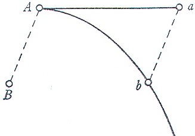
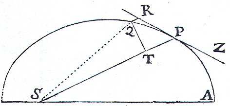
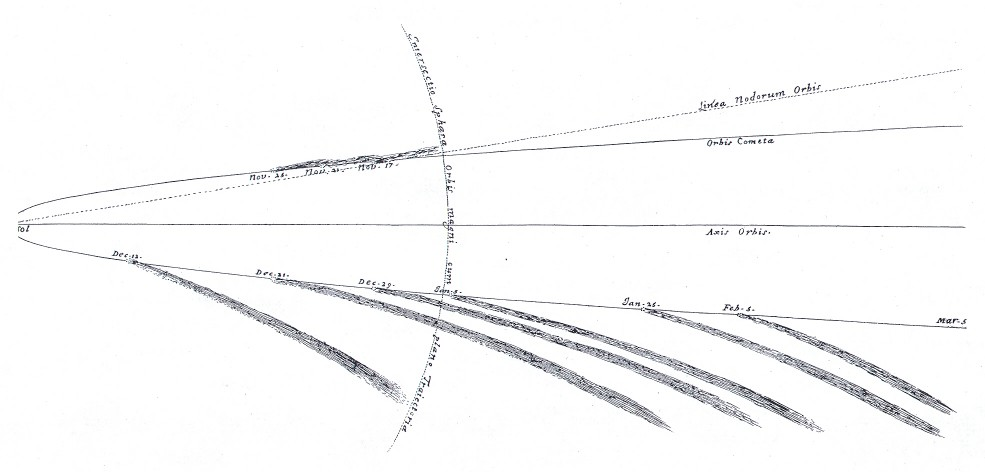

Newton’s Philosophiae Naturalis Principia Mathematica
No work of science has drawn more attention from philosophers than Newton's Principia. The reasons for this, however, and consequently the focus of the attention have changed significantly from one century to the next. During the 20th Century philosophers have viewed the Principia in the context of Einstein's new theory of gravity in his theory of general relativity. The main issues have concerned the relation between Newton's and Einstein's theories of gravity and what the need to replace the former with the latter says about the nature, scope, and limits of scientific knowledge. During most of the 18th Century, by contrast, Newton's theory of gravity remained under dispute, especially because of the absence of a mechanism — in particular, a contact mechanism — producing gravitational forces. The philosophic literature correspondingly endeavored to clarify and to resolve, one way or the other, the dispute over whether the Principia should or should not be viewed as methodologically well founded. By the 1790s Newton's theory of gravity had become established among those engaged in research in orbital mechanics and physical geodesy, leading to the Principia becoming the exemplar of science at its most successful. Philosophic interest in the Principia during the 19th Century therefore came to focus on how Newton had achieved this success, in part to characterize the knowledge that had been achieved and in part to pursue comparable knowledge in other areas of research. Unfortunately, a very large fraction of the philosophic literature in all three centuries has suffered from a quite simplistic picture of the Principia itself. The main goal of this entry is to replace that simplistic picture with one that does more justice to the richness of both the content and the methodology of the Principia.
- 1. Overview: The Importance of the Work
- 2. The Historical Context of the Principia
- 3. The Three Editions of the Principia
- 4. “Definitions” and absolute space, time, and motion
- 5. Newton's Laws of Motion
- 6. Book 1 of the Principia
- 7. Book 2 of the Principia
- 8. Book 3 of the Principia
- 9. The Scientific Achievement of the Principia
- 10. The Methodology of the Principia
- Bibliography
- Academic Tools
- Other Internet Resources
- Related Entries
1. Overview: The Importance of the Work
Viewed retrospectively, no work was more seminal in the development of modern physics and astronomy than Newton's Principia. Its conclusion that the force retaining the planets in their orbits is one in kind with terrestrial gravity ended forever the view dating back at least to Aristotle that the celestial realm calls for one science and the sublunar realm, another. Just as the Preface to its first edition had proposed, the ultimate success of Newton's theory of gravity made the identification of the fundamental forces of nature and their characterization in laws the primary pursuit of physics. The success of the theory led as well to a new conception of exact science under which every systematic discrepancy between observation and theory, no matter how small, is taken as telling us something important about the world. And, once it became clear that the theory of gravity provided a far more effective means than observation for precisely characterizing complex orbital motions — just as Newton had proposed in the Principia in the case of the orbit of the Moon — physical theory gained primacy over observation for purposes of answering specific questions about the world.
The retrospective view of the Principia has been different in the aftermath of Einstein's special and general theories of relativity from what it was throughout the nineteenth century. Newtonian theory is now seen to hold only to high approximation in limited circumstances in much the way that Galileo's and Huygens's results for motion under uniform gravity came to be seen as holding only to high approximation in the aftermath of Newtonian inverse-square gravity. In the middle of the nineteenth century, however, when there was no reason to think that any confuting discrepancy between Newtonian theory and observation was ever going to emerge, the Principia was viewed as the exemplar of perfection in empirical science in much the way that Euclid's Elements had been viewed as the exemplar of perfection in mathematics at the beginning of the seventeenth century. Because of the extent to which Einsteinian theory was grounded historically on Newtonian science, the Principia has retained its unique seminal position in the history of physics in our post-Newtonian era. Perhaps more strikingly, because of the logical relationship between Newtonian and Einsteinian theory — Einstein showed that Newtonian gravity holds as a limit-case of general relativity in just the way Newton showed (in Book 1, Section 10) that Galilean uniform gravity holds as a limit-case of inverse-square gravity — even though the Principia can no longer be regarded as an exemplar of perfection, it is still widely regarded by physicists as an exemplar of empirical science at its best.
In spite of extravagant claims made about the Principia by some in the years after it first appeared — “… he seems to have exhausted his Argument, and left little to be done by those that shall succeed him”[1] — the most positive view of it that anyone could have substantiated during the first half of the eighteenth century would have emphasized its promise more than its achievements. The theory of gravity had too many loose ends, the most glaring of which was a factor of 2 discrepancy in the mean motion of the lunar apogee, a discrepancy that undercut the claim that the Moon is held in orbit by an inverse-square force. No one knew these loose ends better than Newton himself, yet no one had a greater sense of the potential of the theory of gravity to resolve a whole host of questions in planetary astronomy — which may well explain why he made these loose ends difficult to see except by the most technically skilled, careful readers. Between the late 1730s and the early 1750s the situation changed dramatically when several of the loose ends were tied up, in some cases yielding such extraordinary results as the first truly successful descriptive account of the motion of the Moon in the history of astronomy. During the second half of the eighteenth century the promise of the Principia was not only universally recognized by those active in empirical research, but a large fraction of this promise was realized. What we now call “Newtonian mechanics” emerged in this process, as did the gravity-based accounts of the often substantial divergences of the planets from Keplerian motion, the achievement of Newton's theory of gravity that ultimately ended all opposition to it.
During the eighteenth century the Principia was also seen as putting forward a world view directly in opposition to the broadly Cartesian world view that in many circles had taken over from the Scholastic world view during the second half of the seventeenth century. Newton clearly intended the work to be viewed in this way when in 1686 he changed its title to Philosophiae Naturalis Principia Mathematica, in allusion to Descartes's most prominent work at the time, Principia Philosophiae. (The title page of Newton's first edition underscored this allusion by placing the first and third words of the title in larger type.) The main difference in the world view in Newton's Principia was to rid the celestial spaces of vortices carrying the planets. Newtonians subsequently went beyond Newton in enhancing this world view in various ways, including forces everywhere expressly acting at a distance. The “clockwork universe” aspect of the Newtonian world view, for example, is not to be found in the Principia; it was added by Laplace late in the eighteenth century, after the success of the theory of gravity in accounting for complex deviations from Keplerian motion became fully evident.
In addition to viewing the theory of gravity as potentially transforming orbital astronomy, Newton saw the Principia as illustrating a new way of doing natural philosophy. One aspect of this new way, announced in the Preface to the first edition, was the focus on forces:
For the whole difficulty of philosophy seems to be to discover the forces of nature from the phenomena of motions and then to demonstrate the other phenomena from these forces. It is to these ends that the general propositions in books 1 and 2 are directed, while in book 3 our explication of the system of the world illustrates these propositions. For in book 3, by means of propositions demonstrated mathematically in books 1 and 2, we derive from celestial phenomena the gravitational forces by which bodies tend toward the sun and toward the individual planets. Then the motions of the planets, the comets, the moon, and the sea are deduced from these forces by propositions that are also mathematical. If only we could derive the other phenomena of nature from mechanical principles by the same kind of reasoning! For many things lead me to have a suspicion that all phenomena may depend on certain forces by which particles of bodies, by causes not yet known, either are impelled toward one another and cohere in regular figures, or are repelled from one another and recede. Since these forces are unknown, philosophers have hitherto made trial of nature in vain. But I hope that the principles set down here will shed some light on either this mode of philosophizing or some truer one. [P, 382][2]
A second aspect of the new method concerns the use of mathematical theory not to derive testable conclusions from hypotheses, as Galileo and Huygens had done, but to cover a full range of alternative theoretical possibilities, enabling the empirical world then to select among them. This new approach is spelled out most forcefully at the end of Book 1, Section 11:
I use the word “attraction” here in a general sense for any endeavor whatever of bodies to approach one another, whether that endeavor occurs as a result of the action of the bodies either drawn toward one another or acting on one another by means of spirits emitted or whether it arises from the action of ether or of air or of any medium whatsoever — whether corporeal or incorporeal — in any way impelling toward one another the bodies floating therein. I use the word “impulse” in the same general sense, considering in this treatise not the species of forces and their physical qualities but their quantities and mathematical proportions, as I have explained in the definitions. Mathematics requires an investigation of those quantities of forces and their proportions that follow from any conditions that may be supposed. Then, coming down to physics, these proportions must be compared with the phenomena, so that it may be found out which conditions of forces apply to each kind of attracting bodies. And then, finally, it will be possible to argue more securely concerning the physical species, physical causes, and physical proportions of these forces. [P, 588]
A third aspect of the new method, which proved most controversial at the time, was the willingness to hold questions about the mechanism through which forces effect their changes in motion in abeyance, even when the mathematical theory of the species and proportions of the forces seemed to leave no alternative but action at a distance. This aspect remained somewhat tacit in the first edition, but then, in response to criticisms it received, was made polemically explicit in the General Scholium added at the end of the second edition:
I have not as yet been able to deduce from phenomena the reason for these properties of gravity, and I do not feign hypotheses. For whatever is not deduced from the phenomena must be called a hypothesis; and hypotheses, whether metaphysical or physical, or based on occult qualities, or mechanical, have no place in experimental philosophy. In this experimental philosophy, propositions are deduced from the phenomena and are made general by induction. The impenetrability, mobility, and impetus of bodies and the laws of motion and law of gravity have been found by this method. And it is enough that gravity should really exist and should act according to the laws that we have set forth and should suffice for all the motions of the heavenly bodies and of our sea. [P, 943][3]
During most of the eighteenth century the primary challenge the Principia presented to philosophers revolved around what to make of a mathematical theory of forces in the absence of a mechanism, other than action at a distance, through which these forces work. By the last decades of the century, however, little room remained for questioning whether gravity does act according to the laws that Newton had set forth and does suffice for all the motions of the heavenly bodies and of our sea. No one could deny that a science had emerged that, at least in certain respects, so far exceeded anything that had ever gone before that it stood alone as the ultimate exemplar of science generally. The challenge to philosophers then became one of spelling out first the precise nature and limits of the knowledge attained in this science and then how, methodologically, this extraordinary advance had been achieved, with a view to enabling other areas of inquiry to follow suit.
2. The Historical Context of the Principia
The view is commonplace that what Newton did was to put forward his theory of gravity to explain Kepler's already established “laws” of orbital motion; and the universality of the law of gravity then ended up explaining the deviations from Keplerian motion by attributing them to gravitational interaction of the planets. This is wrong on several counts, the most immediate of which is that Kepler's “laws” were by no means established before the Principia. The rules for calculating orbital motion that Kepler put forward in the first two decades of the seventeenth century had indeed achieved a spectacular gain in accuracy over anything that had come before. Kepler's rules, however, did not yield comparable accuracy for the motion of the Moon, and even in the case of the planets the calculated locations were sometimes off by as much as a fourth of the width of the Moon. More importantly, by 1680 several other approaches to calculating the orbits had been put forward that achieved the same level of not quite adequate accuracy as Kepler's. In particular, Newton was familiar with seven different approaches to calculating planetary orbits, all at roughly the same accuracy. Only two of these, Kepler's and Jeremiah Horrocks's, used Kepler's area rule — planets sweep out equal areas in equal times with respect to the Sun — to locate planets along their trajectories. Ismaël Boulliau and, following him, Thomas Streete (from whose Astronomia Carolina Newton first learned orbital astronomy) replaced the area rule with a geometric construction. Vincent Wing had adopted still another geometric construction in the late 1660s after having earlier used a point of equal angular motion oscillating about the empty focus of the ellipse; and Nicolaus Mercator in 1676 added still a further geometric construction.[4] Of these six alternative approaches, only Horrocks and, following him, Streete, took Kepler's 3/2 power rule — the periods of the planets vary as the square root of the cube of their mean distances from the Sun — seriously enough to use the periods rather than positional observations to determine their mean distances.[5]
All these approaches followed Kepler in using an ellipse to represent the trajectory. (The primary historical reason for this was Kepler's success in predicting the 1631 transit of Mercury across the Sun.) This, however, does not mean that the ellipse was established as anything more than a mathematically tractable close approximation to the true orbit. In fact, the planetary orbits known then are not all that elliptical. The minor axis of Mercury is only 2 percent shorter than the major axis, the minor axis of Mars, only 0.4 percent shorter, and in all other cases the difference between an ellipse and an eccentric circle was beyond detection. Newton had real grounds for claiming in a letter to Halley in June 1686 a “right” to the ellipse, remarking that “Kepler knew the Orb to be not circular but oval, and guest it to be Elliptical” [C, II, 436]. Entirely independently, the most judicious reader of the first edition of the Principia, Christiaan Huygens, wrote the following summary of the Principia‘s achievement in his notebook upon reading the complimentary copy Newton had sent him:
The famous M. Newton has brushed aside all the difficulties together with the Cartesian vortices; he has shown that the planets are retained in their orbits by their gravitation toward the Sun. And that the excentrics necessarily become elliptical. [OH, XXI, 143]
So, all three of Kepler's rules that came to be called “laws” after the Principia were known to be nothing more than holding to high approximation when Newton started on the project in 1684. And the leading issue in orbital astronomy at the time was not why Kepler's rules hold, but rather which, if any, of the comparably accurate different approaches to calculating orbits was to be preferred.
The distinct possibility of the ellipse being only an approximation to the true trajectory explains the appropriateness of the question Hooke put to Newton in 1679 and Halley put to him again in 1684 — what trajectory does a body describe when moving under an inverse-square force directed toward a central body? The inverse-square part of this question came from combining the mathematical theory of uniform circular motion, which Huygens had published in his Horologium Oscillatorium of 1673, with Kepler's 3/2 power rule: the force in a string retaining a body in a uniform circular orbit varies directly as the radius of the circle and inversely as the square of the period; but the squares of the periods of the planets vary as the cubes of their mean distances; and hence, at least to a first approximation, the forces retaining the planets in their orbits vary inversely with the square of the radii of their nearly circular orbits. But now allow the distance of the orbiting body from the center to vary rather than remaining constant, as in a circle. What trajectory would result if the force toward the center varies as the inverse-square of the distance from the center toward which the force is always directed? The answer in the nine page tract “De Motu Corporum in Gyrum” that Newton sent to Halley in November 1684 is, an ellipse, provided the velocity is not too high (and if it is, then instead a parabola or a hyperbola, depending on the velocity). The key step in developing this answer is a generalization of uniform circular motion to the case of motion under a “centripetal” force — a term Newton coined from Huygens's “centrifugal” force, by which he meant the tension in the string keeping the body in a circle; and a key to this step was the discovery that a body moving under any form of centripetal force always sweeps out equal areas in equal times with respect to that center, so that the appropriate geometrical representation of time for generalizing uniform circular motion is area swept out rather than angle or arc length. The tract also confirms that Kepler's 3/2 power rule continues to hold for bodies orbiting in confocal ellipses governed by inverse-square centripetal forces.
These were remarkable steps forward at the time, but they and the questions behind them form only an initial part of the context in which Newton went on to write the Principia. Shortly after the “De Motu” tract went off to London, Newton revised the tract and added two further passages. The question precipitating this revision appears to have been about the effect the inverse-square centripetal forces directed toward Jupiter, as implied by its satellites, have on the Sun. Newton first added two principles that he first called “hypotheses” and then changed to “laws”:
Law 3: The relative motions of bodies enclosed in a given space are the same whether that space is at rest or moves perpetually and uniformly in a straight line without circular motion.
Law 4: The common center of gravity does not alter its state of motion or rest through the mutual actions of bodies. [U, 267]
The second of the two added passages concerns motion in resisting media; it provides a context in which to read Book 2 of the Principia.
The first added passage, which has become known as the “Copernican scholium,” we here quote in full because it, better than anything else, explains what led Newton into the further research that turned the nine-page tract into the five hundred page Principia. It occurs as a single long paragraph, but is here broken into three segments in order to facilitate commenting on it:
Moreover, the whole space of the planetary heavens is either at rest (as is commonly believed) or uniformly moved in a straight line, and similarly the common centre of gravity of the planets (by Law 4) is either at rest or is moved at the same time. In either case the motions of the planets among themselves (by Law 3) take place in the same manner and their common centre of gravity is at rest with respect to the whole space, and so it ought to be considered the immobile center of the whole planetary system. Thence indeed the Copernican system is proved a priori. For if a common centre of gravity is computed for any position of the planets, this either lies in the body of the Sun or will always be very near it.
By reason of this deviation of the Sun from the center of gravity the centripetal force does not always tend to that immobile center, and hence the planets neither move exactly in ellipses nor revolve twice in the same orbit. Each time a planet revolves it traces a fresh orbit, as happens also with the motion of the Moon, and each orbit depends upon the combined motions of all the planets, not to mention their actions upon each other. Unless I am much mistaken, it would exceed the force of human wit to consider so many causes of motion at the same time, and to define the motions by exact laws which would allow of an easy calculation.
Leaving aside these fine points, the simple orbit that is the mean between all vagaries will be the ellipse that I have discussed already. If any one shall attempt to determine this ellipse by trigonometrical computation from three observations (as is usual) he will be proceeding without due caution. For these observations will share in the very small irregular motions here neglected and so cause the ellipse to deviate somewhat from its actual magnitude and position (which ought to be the mean among all errors), and so there will be as many ellipses differing from each other as there are trios of observations employed. Very many observations must therefore be joined together and assigned to a single operation which mutually moderate each other and display the mean ellipse both as regards position and magnitude. [U, 280]
The first segment highlights a further component of the historical context in which the Principia was written and read. Galileo's discovery of the phases of Venus in 1613 had provided decisive evidence against the Ptolemaic system,[6] but it could not provide grounds favoring the Copernican over the Tychonic system. In the latter, Mercury, Venus, Mars, Jupiter and Saturn circumnavigate the Sun, and the Sun circumnavigates the Earth, with the consequence that these seven bodies are at all times in the same position in relation to one another as they are in the Copernican system. Whether any decisive empirical grounds could be found favoring the Copernican over the Tychonic system became one of the most celebrated issues of the seventeenth century. Kepler, Galileo, and Descartes all published major books in the first half of the century purporting to resolve this issue,[7] Kepler and Descartes basing their arguments on the physical mechanism each had proposed as governing the orbital motion. Nevertheless, the leading observational astronomer of the second half of the century, G. D. Cassini, was a Tychonist. In the first segment of the “Copernican Scholium” Newton identifies the center of gravity of the planetary system as the appropriate point to which all the motion should be referred — the technical issue behind the issue over the two systems — and then announces that the centripetal forces identified in the text of “De Motu” as governing the orbital motion open the way to establishing a slightly qualified form of the Copernican system.[8] Newton's discovery of this line of reasoning was surely a major factor urging him on to the Principia.
The second segment of the “Copernican Scholium” addresses an issue in orbital astronomy that forms a still further component in the historical context of the Principia. Separate from the question whether Kepler's or some other approach was to be preferred was the question whether the true motions are significantly more irregular and complicated than the calculated motions in any of these approaches. The complexity of the lunar orbit and the continuing failure to describe it within the accuracy Kepler had achieved for the planets was one consideration lying behind this question. Another came from Kepler's own finding, noted in the Preface to his Rudolphine Tables[9] and subsequently supported by others, that the true motions may involve further vagaries, as evidenced by apparent changes in the values of orbital elements over time. The most important consideration behind this question, however, came from Descartes' claim that, in keeping with the changing motions of his vortices over long periods of time, the orbits are not mathematically perfect and “they are continuously changed by the passing of the ages” [D, 3, 34]. In the second segment of the quoted Scholium, Newton concludes that, in contrast to the ellipse that answered the mathematical question put to him by Hooke and Halley, the true orbits are not ellipses, but are indeed indefinitely complex. This conclusion is nowhere so forcefully stated in the published Principia, but knowledgeable readers nonetheless saw the work as answering the question whether the true motions are mathematically perfect in the negative.
Finally, the second and third segments together not only point out that Keplerian motion is only an approximation to the true motions, but they call attention to the potential pitfalls in using the orbits published by Kepler and others as evidence for claims about the planetary system. For example, if the true motions are so complicated, then it is not surprising that all the different calculational approaches were achieving comparable accuracy, for all of them at best hold only approximately. Equally, the success in calculating the orbits could not serve as a basis to argue against Cartesian vortices, for the irregularities entailed by them could not simply be dismissed. The spectre raised was the very one Newton had objected to during the controversy over his earlier light and color papers: too many hypotheses could be made to fit the same data.[10] Worse, the multiplicity of tenable hypotheses was a spectre haunting mathematical astronomy as a discipline from the end of the sixteenth century forward.[11] So, the conclusion that calculated orbits can at most be mere approximations would have been seen as raising the possibility that truth and exactness were beyond the reach of mathematical astronomy. The main reason why the Principia includes so much beyond the “De Motu” tract is Newton's endeavor to reach conclusions that had claim to being exact and true in spite of the inordinate complexities of the actual motions.
The historical context in which Newton wrote the Principia involved a set of issues that readers of the first edition saw it as addressing: Was Kepler's approach to calculating the orbits, or some other, to be preferred? Was there some empirical basis for resolving the issue of the Copernican versus the Tychonic system? Were the true motions complicated and irregular versus the calculated motions? Can mathematical astronomy be an exact science? No reader of the Principia at the time had the benefit of seeing how Newton had these questions tied together in the “Copernican Scholium” because it did not appear in print until two hundred years later.[12] Nothing, however, brings out more clearly the extent to which the expanded scope of the Principia stemmed from Newton's preoccupation with the problem of reaching conclusions that had claim to being exact from evidence that, by his reckoning, held at best to high approximation. This is why the “Copernican scholium” provides the most illuminating context for reading the Principia. Equally, its being unknown for so long helps to explain why the Principia has generally been read so simplistically.
3. The Three Editions of the Principia[13]
Newton originally planned a two-book work, with the first book consisting of propositions mathematically derived from the laws of motion, including a handful concerning motion under resistance forces, and the second book, written and even formatted in the manner of Descartes's Principia, applying these propositions to lay out the system of the world. By the middle of 1686 Newton had switched to a three-book structure, with the second book devoted to motion in resisting media. What appears to have convinced him that this topic required a separate book was the promise of pendulum-decay experiments to allow him to measure the variation of resistance forces with velocity.[14] When Hooke raised a priority issue on inverse-square forces, Newton dropped the original version of the last book, switching to presenting the system of the world in a sequence of mathematically argued propositions, many of which demand far more of the reader than anything in the original version. The original “System of the World” did appear in print the year after Newton died. No complete text for the original version of Book 1 has ever been found.
Newton was disappointed in the critical response to the first edition. The response in England was adulatory, but the failure to note loose ends must have led Newton to doubt how much anyone had mastered technical details. The leading scientific figure on the Continent, Christiaan Huygens, offered a mixed response to the book in his Discourse on the Cause of Gravity (1690). On the one hand, he was convinced by Newton's argument that inverse-square terrestrial gravity not only extends to the Moon, but is one in kind with the centripetal force holding the planets in orbit; on the other hand,
I am not especially in agreement with a Principle that he supposes in this calculation and others, namely, that all the small parts that we can imagine in two or more different bodies attract one another or tend to approach each other mutually. This I could not concede, because I believe I see clearly that the cause of such an attraction is not explicable either by any principle of Mechanics or by the laws of motion. Nor am I at all persuaded of the necessity of the mutual attraction of whole bodies, having shown that, were there no Earth, bodies would not cease to tend toward a center because of what we call their gravity. [HD, p.159]
Others on the Continent pressed this complaint even more forcefully. The response that may well have bothered Newton most was the review in Journal des Sçavants:
The work of M. Newton is a mechanics, the most perfect that one could imagine, as it is not possible to make demonstrations more precise or more exact than those he gives in the first two books…. But one has to confess that one cannot regard these demonstrations otherwise than as only mechanical; indeed the author recognizes himself at the end of page four and the beginning of page five that he has not considered their Principles as a Physicist, but as a mere Geometer….
In order to make an opus as perfect as possible, M. Newton has only to give us a Physics as exact as his Mechanics. He will give it when he substitutes true motions for those that he has supposed.[15]
Complicating the matter further was the publication in 1689 of Leibniz's “Essay on the causes of celestial motions,” which offered a vortex theory in which “a planet moves with a double motion composed of the harmonic circulation of its fluid deferent orb, and the paracentric motion, as if it had a certain gravity of attraction, namely an impulsion towards the Sun” [L, 132].[16] Leibniz further concluded that when the body “is carried in an ellipse (or another conic section) with a harmonic circulation, and the centre both of attraction and of circulation is at the focus of the ellipse, then the attractions or solicitations of gravity will be directly as the squares of the circulations, or inversely as the squares of the radii or distances from the focus” [L, 137]. So, within a year and a half of the publication of the Principia a competing vortex theory of Keplerian motion had appeared that was consistent with Newton's conclusion that the centripetal forces in Keplerian motion are inverse-square. This gave Newton reason to sharpen the argument in the Principia against vortices.
The second edition appeared in 1713, twenty six years after the first. It had five substantive changes of note. First, the structure of the argument for universal gravity at the beginning of Book 3 was made more evident, and the word ‘hypothesis’ was dropped from it. Second, because of disappointment with pendulum-decay experiments and an erroneous claim about the rate a liquid flows vertically through a hole in the bottom of a container, the second half of Section 7 of Book 2 was entirely replaced, ending with new vertical-fall experiments to measure resistance forces versus velocity and a forcefully stated rejection of all vortex theories.[17] Third, the treatment of the variation of surface gravity with latitude (Book 3, Proposition 20) was significantly extended, partly in response to Huygens's alternative treatment of this variation, but also because of more recent data from near the Equator. Fourth, the treatment of the wobble of the Earth producing the precession of the equinoxes was revised in order to accommodate a much reduced gravitational force of the Moon on the Earth than in the first edition. Fifth, several further examples of comets were added at the end of Book 3, taking advantage of Halley's efforts on the topic during the intervening years. In addition to these, two changes were made that were more polemical than substantive: Newton added the General Scholium following Book 3 in the second edition, and his editor Roger Cotes provided a long anti-Cartesian (and anti-Leibnizian) Preface.
The third edition appeared in 1726, thirty nine years after the first. Most changes in it involved either refinements or new data. The most significant revision of substance was to the variation of surface gravity with latitude, where Newton now concluded that the data showed that the Earth has a uniform density. Subsequent editions and translations have been based on the third edition. Of particular note is the edition published by two Jesuits, Le Seur and Jacquier, in 1739-42, for it contains proposition-by-proposition commentary, much of it employing the Leibnizian calculus, that extends to roughly the same length as Newton's text.
4. “Definitions” and absolute space, time, and motion
The Principia opens with a section called “Definitions” that includes Newton's discussion of absolute space, time, and motion. No part of the Principia has received more discussion by philosophers over the three centuries since it was published. Unfortunately, however, a tendency not to pay close attention to the text has caused much of this discussion to produce unnecessary confusion.[18]
The definitions inform the reader of how key technical terms, all of them designating quantities, are going to be used throughout the Principia. In the process Newton introduces terms that have remained a part of physics ever since, such as mass, inertia, and centripetal force. The emphasis in every one of the definitions is on how the designated quantity is to be measured, as illustrated by the opening definition: “Quantity of matter [or mass] is a measure of matter that arises from its density and volume jointly.” (Because a primary measure of density was then specific gravity, no circularity arises here.) Newton distinguishes among three ways of quantifying centripetal forces: the absolute quantity, which corresponds to what we would call the field strength of a central force field; the accelerative quantity, which “is the measure of this force that is proportional to the acceleration generated in a given time;” and the motive quantity, which is the measure of the force proportional to what we would call the change in linear momentum in a given time.
It is important to recognize that, in calling the referents of the defined terms “quantities,” Newton is assigning them to the ontological category of quantity in Aristotle's sense. Thus force and motion are quantities that have direction as well as magnitude, and it makes no sense to talk of forces as individuated entities or substances. Newton's laws of motion and the propositions derived from them involve relations among quantities, not among objects. In place of “no entity without identity,” we have “no quantity without definite proportions;”[19] and the demand on measurement is to supply values that unequivocally yield an adequate approximation to these definite proportions.
Immediately following the eight definitions is a Scholium on space, time, and motion. One source of confusion in the literature on this scholium is not paying attention to the primary distinction Newton is drawing, which is between “absolute, true, mathematical” motion versus “relative, apparent, common” motion. The naive distinction between true and apparent motion was, of course, entirely commonplace. Moreover, Newton is scarcely introducing it into astronomy. Ptolemy's principal innovation in orbital astronomy — the so-called bi-section of eccentricity — entailed that half of the observed first inequality in the motion of the planets arises from a true variation in speed, and half from an only apparent variation associated with the observer being off center. Similarly, Copernicus's main point was that the second inequality — that is, the observed retrograde motions of the planets — involved not true, but only apparent motions. And the subsequent issue between the Copernican and Tychonic system concerned whether the observed annual motion of the Sun through the zodiac is a true or only an apparent motion of the Sun. So, what Newton is doing in the scholium on space and time is not to introduce a new distinction, but to explicate with more care a distinction that had been fundamental to astronomy for centuries.
The distinctions between “absolute, true, and mathematical” and “relative, apparent, and common” time and space are the conceptual basis Newton employs in laying out the corresponding distinction for motion. He says, “relative, apparent, and common time is any sensible and external measure (precise or imprecise) of duration by motion,” adding a parallel point about absolute space. He points out that the distinction between absolute and relative time has long been part of astronomy insofar as astronomers have long introduced corrections (via the equation of time) to the natural day “in order to measure celestial motions on the basis of a truer time,” and he raises the possibility of there being “no uniform motion by which time may have an exact measure.” Absolute motion is defined as change from one place in absolute space to another. “But since these parts of space cannot be seen and cannot be distinguished from one another by our senses, we use sensible measures in their stead,” adding “it is possible that there is no body truly at rest to which places and motions may be referred” [P, 410]. In short, both absolute time and absolute location are quantities that cannot themselves be observed, but instead have to be inferred from measures of relative time and location, and these measures are always only provisional; that is, they are always open to the possibility of being replaced by some new (still relative) measure that is deemed to be better behaved across a variety of phenomena in parallel with the way in which sidereal time was deemed to be preferable to solar time.
Notice here the expressed concern with measuring absolute, true, mathematical time, space, and motion, all of which are identified at the beginning of the scholium as quantities. The scholium that follows the eight definitions thus continues their concern with measures that will enable values to be assigned to the quantities in question. Newton expressly acknowledges that these measures are what we would now call theory-mediated and provisional. Measurement is at the very heart of the Principia. It pervades the definitions and scholium on space and time precisely because the primary point of this section is to spell out (in Howard Stein's words) “the empirical content of a set of theoretical notions” [Stein, 1967, 281].
Accordingly, while Newton's distinctions between absolute and relative time and space provide a conceptual basis for his explicating his distinction between absolute and relative motion, absolute time and space cannot enter directly into empirical reasoning insofar as they are not themselves empirically accessible. In other words, the Principia presupposes absolute time and space for purposes of conceptualizing the aim of measurement, but the measurements themselves are always of relative time and space, and the preferred measures are those deemed to be providing the best approximations to the absolute quantities. Newton never presupposes absolute time and space in his empirical reasoning. Motion in the planetary system is referred to the fixed stars, which are provisionally being taken as an appropriate reference for measurement, and sidereal time is provisionally taken as the preferred approximation to absolute time. Moreover, in the corollaries to the laws of motion Newton specifically renounces the need to worry about absolute versus relative motion in two cases:
Corollary 5. When bodies are enclosed in a given space, their motions in relation to one another are the same whether the space is at rest or whether it is moving uniformly straight forward without circular motion.
Corollary 6. If bodies are moving in any way whatsoever with respect to one another and are urged by equal accelerative forces along parallel lines, they will all continue to move with respect to one another in the same way as they would if they were not acted on by those forces.
So, while the Principia presupposes absolute time and space for purposes of conceptualizing absolute motion, the presuppositions underlying all the empirical reasoning about actual motions are philosophically more modest.
If absolute time and space cannot serve to distinguish absolute from relative motions — more precisely, absolute from relative changes of motion — empirically, then what can? Newton answers, “The causes which distinguish true motions from relative motions are the forces impressed upon bodies to generate motion. True motion is neither generated nor changed except by forces impressed upon the moving body itself.” The problem then becomes one of distinguishing the forces impressed on bodies, where forces are quantities; and hence the key issue is whether there are theory-mediated measures of them that yield unequivocal values — in contrast to different measures of the same force that yield different values, the hallmark of relative motion. The famous bucket example that follows is offered as illustrating how forces can be distinguished that will then distinguish between true and apparent motion. The final paragraph of the scholium begins and ends as follows:
It is certainly very difficult to find out the true motions of individual bodies and actually to differentiate them from apparent motions, because the parts of that immovable space in which the bodies truly move make no impression on the senses. But the situation is not utterly hopeless…. But in what follows, a fuller explanation will be given of how to determine true motions from their causes, effects, and apparent differences, and, conversely, of how to determine from motions, whether true or apparent, their causes and effects. For this was the purpose for which I composed the following treatise. [P, 414f]
What does follow are two books of propositions that provide means for inferring forces from motions and motions from forces and a final book that illustrates how these propositions can be applied to the system of the world first to identify the forces governing motion in our planetary system and then to use them to differentiate between certain true and apparent motions of particular interest. In this respect, the empirical content of the theoretical concepts that Newton has explicated in the section called “Definitions” is inextricably linked with the physical theory presented in the rest of the Principia.
The contention that the empirical reasoning in the Principia does not presuppose an unbridled form of absolute time and space should not be taken as suggesting that Newton's theory is free of fundamental assumptions about time and space that have subsequently proved to be problematic. For example, in the case of space, Newton presupposes that the geometric structure governing which lines are parallel and what the distances are between two points is three-dimensional and Euclidean. In the case of time Newton presupposes that, with suitable corrections for such factors as the speed of light, questions about whether two celestial events happened at the same time can in principle always have a definite answer. And the appeal to forces to distinguish real from apparent non-inertial motions presupposes that free-fall under gravity can always, at least in principle, be distinguished from inertial motion.[20]
Equally, the contention that the empirical reasoning in the Principia does not presuppose an unbridled form of absolute space should not be taken as denying that Newton invoked absolute space as his means for conceptualizing true deviations from inertial motion. Corollary 5 to the Laws of Motion, quoted above, put him in a position to introduce the notion of an inertial frame, but he did not do so, perhaps in part because Corollary 6 showed that even using an inertial frame to define deviations from inertial motion would not suffice. Empirically, nevertheless, the Principia follows astronomical practice in treating celestial motions relative to the fixed stars, and one of its key empirical conclusions (Book 3, Prop. 14, Corol. 1) is that the fixed stars are at rest with respect to the center of gravity of our planetary system.
5. Newton's Laws of Motion
The designation “laws of motion” had been used in the Philosophical Transactions of the Royal Society in the late 1660s for principles governing motion under impact put forward by Christopher Wren, John Wallis, and Christiaan Huygens. Only the first of the three laws Newton gives in the Principia corresponds to any of these principles, and even the statement of it is distinctly different: Every body perseveres in its state of being at rest or of moving uniformly straight forward except insofar as it is compelled to change its state by forces impressed. This general principle, which following the lead of Newton came to be called the principle or law of inertia, had been in print since Pierre Gassendi's De motu impresso a motore translato of 1641. Newton probably first encountered it in print when he read Descartes' Principia, where it is comprised by his first two “laws of nature” and is used immediately to assert “that any body which is moving in a circle constantly tends to move away from the center of the circle which it is describing.” This is the basis for Descartes concluding that some form of unseen matter (namely the vortices) must be in contact with the planets, for otherwise they would go off in a straight line. It is the first of the three hypotheses from which Huygens develops his theory of “falling heavy bodies and their motion in a cycloid” in his Horologium Oscillatorium of 1673: If there were no gravity, and if the air did not impede the motion of bodies, then any body will continue its given motion with uniform velocity in a straight line. Newton had adopted it as a “hypothesis” in the registered version of “De Motu,” though stated without reference to impressed forces: Every body under the sole action of its innate force moves uniformly in a straight line indefinitely unless something extraneous hinders it. The striking difference in the formulation in the Principia versus the one in “De Motu” — and, for that matter, versus all earlier formulations in print — is the reference to impressed forces. In all earlier formulations, any departure from uniform motion in a straight line implied the existence of a material impediment to the motion; in the more abstract formulation in the Principia, the existence of an impressed force is implied, with the question of how this force is effected left open.
The modern F=ma form of Newton's second law nowhere occurs in any edition of the Principia even though he had seen his second law formulated in this way in print during the interval between the second and third editions in Jacob Hermann's Phoronomia of 1716. Instead, it has the following formulation in all three editions: A change in motion is proportional to the motive force impressed and takes place along the straight line in which that force is impressed. In the body of the Principia this law is applied both to discrete cases, in which an instantaneous impulse such as from impact is effecting the change in motion, and to continuously acting cases, such as the change in motion in the continuous deceleration of a body moving in a resisting medium. Newton thus appears to have intended his second law to be neutral between discrete forces (that is, what we now call impulses) and continuous forces. (His stating the law in terms of proportions rather than equality bypasses what seems to us an inconsistency of units in treating the law as neutral between these two.)
The obvious question with the second law is what Newton means by “a change in motion.” If he had meant a change in what we call momentum — that is, if he had meant, in modern notation, Δmv — the proper phrasing would have been “a change in the quantity of motion.” In a passage composed in the early 1690s when Newton was intending to restructure the Principia, he explained what he meant:
If the body A should [see Fig. 1], at its place A where a force is impressed upon it, have a motion by which, when uniformly continued, it would describe the straight line Aa, but shall by the impressed force be

Figure 1
deflected from this line into another one Ab and, when it ought to be located at the place a, be found at the place b, then because the body, free of the impressed force, would have occupied the place a and is thrust out from this place by that force and transferred therefrom to the place b, the translation of the body from the place a to the place b will, in the meaning of this Law, be proportional to this force and directed to the same goal towards which this force is impressed. Whence, if the same body deprived of all motion and impressed by the same force with the same direction, could in the same time be transported from the place A to the place B, the two straight lines AB and ab will be parallel and equal. For the same force, by acting with the same direction and in the same time on the same body whether at rest or carried on with any motion whatever, will in the meaning of this Law achieve an identical translation towards the same goal; and in the present case the translation is AB where the body was at rest before the force was impressed, and ab where it was there in a state of motion. [M, 541]
In other words, the measure of the change in motion is the distance between the place where the body would have been after a given time had it not been acted on by the force and the place it is after that time. This is in keeping with the measure universally used at the time for the strength of the acceleration of surface gravity, namely the distance a body starting from rest falls vertically in the first second. The only special provision that Newton has to make is for non-uniform continuously acting forces, for which, in accord with Lemma 10, he takes the distance AB to vary “at the very beginning of the motion in the squared ratio of the times.”[21]
If this way of interpreting the second law seems perverse, keep in mind that the geometric mathematics Newton used in the Principia — and others were using before him — had no way of representing acceleration as a quantity in its own right. Newton, of course, could have conceptualized acceleration as the second derivative of distance with respect to time within the framework of the symbolic calculus. This indeed is the form in which Jacob Hermann presented the second law in his Phoronomia of 1716 (and Euler in the 1740s). But the geometric mathematics used in the Principia offered no way of representing second derivatives. (Newton employed curvature — that is, the circle “touching a curve” — in place of the second derivative with respect to distance throughout the Principia). Hence, it was natural for Newton to stay with the established tradition of using a length as the measure of the change of motion produced by a force, even independently of the advantage this measure had of allowing the law to cover both discrete and continuously acting forces (with the given time taken in the limit in the continuous case).
Under this interpretation, Newton's second law would not have seemed novel at the time. The consequences of impact were also being interpreted in terms of the distance between where the body would have been after a given time, had it not suffered the impact, and where it was after this time, following the impact, with the magnitude of this distance depending on the relative bulks of the impacting bodies. Moreover, Huygens's account of the centrifugal force (that is, the tension in the string) in uniform circular motion in his Horologium Oscillatorium used as the measure for the force the distance between where the body would have been had it continued in a straight line and its location on the circle in a limiting small increment of time; and he then added that the tension in the string would also be proportional to the weight of the body. So, construed in the indicated way, Newton's second law was novel only in its replacing bulk and weight with mass.[22]
In the early stages of his work on the Principia Newton had identified three logically equivalent alternatives for the third law: the action-reaction principle he ultimately chose, the principle we call conservation of linear momentum (Corollary 3 in the Principia), and the principle that “the common center of gravity of two or more bodies does not change its state whether of motion or of rest as a result of the actions of the bodies upon one another” (Corollary 4). Huygens had stated that both of these principles follow from his solution for spheres in collision, and the center of gravity principle, as Newton emphasizes, amounts to nothing more than a generalization of the principle of inertia. Even though his third law was novel in comparison with these other two,[23] Newton nevertheless chose it and relegated the other two to corollaries. Two things can be said about this choice. First, the third law is a local principle, while the two alternatives to it are global principles, and Newton, unlike those working in mechanics on the Continent at the time, generally preferred fundamental principles to be local, perhaps because they pose less of an evidence burden. Second, with the choice of the third law, the three laws all expressly concern impressed forces: the first law authorizes inferences to the presence of an impressed force on a body, the second, to its magnitude and direction, and the third to the correlative force on the body producing it. In this regard, Newton's three laws of motion are indeed axioms characterizing impressed force. Real forces, in contrast to such apparent forces as Coriolis forces (of which Newton was entirely aware, though of course not under this name), are forces for which the third law, as well as the first two, hold, for only by means of this law can real forces and hence changes of motion be distinguished from apparent ones.
Newton presents his first two laws as already “accepted by mathematicians and confirmed by experiments of many kinds” [P, 424].[24] For the third law, by contrast, he offers a variety of forms of support, including experiments on impact. One important element that becomes clear in his discussion of evidence for the third law — and also in Corollary 2 — is that Newton's impressed force is the same as static force that had been employed in the theory of equilibrium of devices like the level and balance for some time. Newton is not introducing a novel notion of force, but only extending a familiar notion of force. Indeed, Huygens too had employed this notion of static force in his Horologium Oscillatorium when he identified his centrifugal force with the tension in the string (or the pressure on a wall) retaining an object in circular motion, in explicit analogy with the tension exerted by a heavy body on a string from which it is dangling. Huygens's theory of centrifugal force was going beyond the standard treatment of static forces only in its inferring the magnitude of the force from the motion of the body in a circle. Newton's innovation beyond Huygens was first to focus not on the force on the string, but on the correlative force on the moving body, and second to abstract this force away from the mechanism by which it acts on the body. Three steps were thus involved in passing from the already familiar static forces to the more abstract Newtonian “dynamic” forces, one by Huygens and two by Newton.[25]
The continuity with Huygens's theory of centrifugal force is important in another respect. In his brief defense of the first two laws of motion Newton remarks, “What has been demonstrated concerning the times of oscillating pendulums depends on the same first two laws and first two corollaries, and this is supported by daily experience with clocks” [P, 424]. In Huygens's Horologium Oscillatorium, the only place any counterpart to the second law surfaces is in the theory of centrifugal force and uniform circular motion. The theory Huygens presents extends to conical pendulums, including a conical pendulum clock that he indicates has advantages over simple pendulum clocks. In the 1670s Newton had used a conical pendulum to confirm Huygens's announced value of the strength of surface gravity as measured by simple cycloidal and small-arc circular pendulums.[26] (Huygens himself had measured the strength of surface gravity with a conical pendulum, obtaining the same value to four significant figures as he had obtained with simple pendulums.[27]) The precise agreement between these two theory-mediated measures of surface gravity, one of them predicated on Newton's first two laws of motion and the other not, in fact constituted the strongest evidence for the first two laws at the time the Principia was first published. For, the simple pendulum measure was known to be stable and accurate into the fourth significant figure. The evidence in hand for the first two laws, taken as a basis for measuring forces, was thus much stronger than has often been appreciated.
Save perhaps for the attribution of the F=ma form of the second law to the Principia, the most widespread mistake about Newton's three laws of motion is that they alone sufficed for all problems in classical mechanics. Those who developed what we now call Newtonian mechanics during the eighteenth century at all times appreciated how far from the truth this is. Newton's three laws of motion suffice for problems involving what Euler dubbed “point-masses.” Indeed, once given the forces acting on a point mass, the three laws hold for all point-masses, including those that lie within bodies. But the three laws must be supplemented by further principles for a whole host of celebrated problems involving bodies, rigid or otherwise, that are not mere point-masses. Perhaps the simplest prominent example at the time was the problem of a small arc circular pendulum with two (or more) point-mass bobs along the string. Huygens had solved this problem in the part of his Horologium Oscillatorium entitled “The Center of Oscillation,” in the process providing the theoretical basis for using added masses to tune pendulum clocks.[28] The reason why Newton's three laws of motion have to be supplemented to solve this problem is easy to see. Consider the case of a pendulum with two point-masses along the length of a rigid string. The outer point-mass has the effect of reducing the speed of the inner one, versus what it would have had without the outer one, and the inner point-mass increases the speed of the outer one. In other words, motion is transferred from the inner one to the outer one along the segment of the string joining them. Once the force transmitted to each point-mass along the string is known, Newton's three laws of motion are sufficient to determine the motion. But his three laws are not sufficient to determine what this force transmitted along the string is. Some other principle beyond them is needed to solve the problem. Which principle is to be preferred in solving this problem became a celebrated issue extending across most of the eighteenth century.[29]
6. Book 1 of the Principia
Book 1 develops a mathematical theory of motion under centripetal forces. In keeping with the Euclidean tradition, the propositions mathematically derived from the laws of motion are labeled either as theorems or as problems. The theorems all have an “if-then” form, enabling them to authorize inferences of their consequents, given their antecedents.[30] But then so too do the problems in effect have an “if-then” logical form, for the (geometric style) solutions they provide authorize inferences from given information to unknowns. The best way to think of the derived propositions, therefore, is as “inference-tickets.” As such, the propositions fall into three categories: (1) ones that license conclusions about forces from information about motions, (2) ones that license conclusions about motions from information about forces, and (3) ones that license conclusions about (net) forces directed toward whole bodies from information about (contributing) forces directed toward the individual parts of the bodies.
A fundamental contrast between Newton's mathematical theory of motion under centripetal forces and the mathematical theories of motion developed by Galileo and Huygens is that Newton's is generic. Galileo and Huygens examined one kind of force, uniform gravity, with a goal of deriving testable consequences. Newton's theory covers not only forces that vary as 1/r2, for which the Principia is famous, but also forces that vary as r, as 1/r3, and even as any arbitrary function of r. At the end of Section 11 he gives a reason, quoted earlier:
Mathematics requires an investigation of those quantities of forces and their proportions that follow from any conditions that may be supposed. Then, coming down to physics, these proportions must be compared with the phenomena, so that it may be found out which conditions of forces apply to each kind of attracting bodies. And then, finally, it will be possible to argue more securely concerning the physical species, physical causes, and physical proportions of these forces. [P, 588f]
He had other reasons as well. The theory of gravity entails that gravity below the surface of a uniformly dense sphere varies linearly with the distance from the center, and hence, at least to a first approximation, this is how gravity varies below the surface of the Earth. Centripetal forces that vary as 1/r3 hold if and only if the trajectory is a spiral;[31] and, given any stationary orbit governed by centripetal forces, superposition of a 1/r3 centripetal force will cause that orbit to precess, as in the case of the lunar orbit.[32] Still, Newton's main reason appears to have been the one given in the quotation.
In one curious respect that Newton mentions only once in passing, the theory does not cover all “conditions that may be supposed.” Newton's theory treats centripetal forces that vary only with the distance from the force center, that is, ones for which the force on two bodies equally distant from that center is always the same. It does not treat centripetal forces that vary with θ and φ, the two angular components of (r, θ, φ) spherical coordinates. This is notable for two reasons. First, the central forces arising in Cartesian vortices would almost certainly have varied with both of these angular components, and hence Newton is tacitly begging a question. Second, as Newton himself realized and noted in Section 13 of Book 1, gravity around a spheroid does not vary simply as 1/r2, but must also vary with latitude.[33] From Newton's point of view, therefore, gravity around Jupiter and the Earth, and surely the Sun as well, does not vary simply as 1/r2. This is one of many often ignored cues pointing to the extent to which the evidential reasoning in the Principia has to be more intricate and subtle than was appreciated at the time, or for that matter even now.
Up to the end of Section 10, Book 1 considers forces that are directed toward geometric centers rather than bodies. As a consequence, only the first two laws of motion enter into any of the proofs until late in Book 1. Even further, as Newton develops the theory to that point, only the accelerative measure of force is employed, and hence even mass plays no role. Included in this segment are by far the most widely read parts of Book 1, then and now: Section 2, which deals with centripetal forces generally, and Section 3, which develops Newton's fundamental discovery that a body moves in a conic section, sweeping out equal areas in equal times about a focus, if and only if the motion is governed by an inverse-square centripetal force directed toward this focus. The stick-figure picture of Book 1 that results from viewing these two sections as its high point blinds the reader not only to the richness of the theory developed in it, but also to several no less important results derived in the rest of it.
The paragraph that opens Section 11 announces, “Up to this point I have been setting forth the motions of bodies attracted toward an immovable center, such as, however, hardly exists in the natural world…. I now go on to set forth the motion of bodies that attract one another” [P, 561] The section first successfully solves the problem of the motion of two bodies under inverse-square mutual attraction. It then turns to the case of more than two bodies, for which Newton can solve only the case of mutual attraction that varies linearly with the distance between bodies. For the inverse-square case, Newton gives only qualitative results, most of them in 22 corollaries to Proposition 66 that Newton calls “imperfect” in the Preface to the first edition. All of these corollaries identify qualitative tendencies in the motions of a body orbiting a second body and attracted to a third, with the majority of the results directed specifically to the perturbing effects of the Sun on the motion of our Moon. It is with Section 11, then, that the Principia departs from the realm of the “De Motu” tract and begins to consider the complexities of the true motions.
Sections 12 and 13 treat attractive forces between bodies that result from — are composed out of — centripetal forces between each of the individual microphysical particles forming them. Section 12 treats spherical bodies, and Section 13, non-spherical bodies. As Newton anticipated, this was the part of Book 1 that would arouse the strongest complaints from readers committed to the view that all forces involve contact between bodies. On top of this, nowhere in Book 1 did the mathematics become more demanding than here. These two sections give primary attention to inverse-square forces and forces that vary linearly with distance, but, just as earlier in Book 1, some results pertain to forces that vary in other ways, included among which are results pointing to experiments that might differentiate between inverse-square and any alternative to it. In the Scholium to Proposition 78 Newton singles out the result of this inquiry that he regarded as most notable:
I have now set forth the two major cases of attractions, namely when the centripetal forces decrease in the squared ratio of the distances or increase in the simple ratio of the distances, causing bodies to revolve in conics, and composing centripetal forces of spherical bodies that decrease or increase in proportion to the distance from the center according to the same law — which is worthy of note. [P, 599][34]
This is one of the few places in the Principia where Newton singles out a result in an aside in this way. That an attracting sphere can be treated as if the mass were concentrated at its center in the case of attractive forces that vary linearly with the distance was not so notable, for as Newton shows in Section 13, in this case of attractive forces an attracting body always can be treated as if the mass were located at its center of gravity, regardless of shape. The truly notable finding is that it is also true of spheres in the case of inverse-square forces. The subsequent results in Sections 12 and 13 indicate that, in the case of all other kinds of centripetal force, the attraction toward a sphere is not the same as attraction toward all its mass concentrated in the center; and even in the inverse-square case, the result does not hold for other shapes or for spheres that do not have spherically symmetric density.
Although Newton does not so expressly single out other results of Book 1, a few deserve comment here. The key that opened the way to Newton's theory of motion under centripetal forces was his discovery of how to generalize to non-circular trajectories the solution that he and Huygens had obtained for the central force in uniform circular motion. Figure 2 shows Newton's diagram for this generalization from the first edition. Suppose first that the trajectory APQ is part of a circle of radius SP along which the body at P is moving uniformly. Both Newton and Huygens had reasoned that the displacement QR from the tangent is proportional to the product of the force retaining the body in its circular orbit and the square of the time t for the body to
Figure 2
move from P to Q, and hence the force varies as QR/t2. But the time is proportional to PQ divided by the velocity v, and in the limit as Q approaches P, PQ approaches PR, so that t2 becomes equal to PR2/v2. Proposition 36 of Book 3 of Euclid entails that in this limit PR2 is equal to the product of QR and twice the radius SP, and hence the force for uniform motion in a circle varies as v2/SP or v2/r.[35]
Newton's Proposition 6 generalizes this result to not necessarily uniform motion under centripetal forces along an arbitrary trajectory in which equal areas are swept out in equal times with respect to S, in accord with Proposition 1 of Book 1. The central force at P is again proportional to the displacement from the tangent QR over a short increment of time divided by the square of this time; but now the time is proportional not to the arc PQ, but to the area swept out, which in the limit as Q approaches P, is the triangular area SPxQT/2. Therefore, to keep a body moving along a given non-circular trajectory, the centripetal force must vary along the trajectory as (1/SP2) — that is, 1/r2 — times the limit of (QR/QT2) as Q approaches P. In the second edition Newton adds a corollary that displays another way of seeing the result as a generalization of uniform circular motion: the centripetal force along the trajectory must everywhere vary as v2/(ρsinSPR), where ρ is the radius of curvature of the trajectory at P. With this, the body can be viewed as driven from one instantaneous circle to the next by the component of force tangential to the motion, a component that disappears in the case of uniform circular motion.
Newton illustrates the value of Proposition 6 with a series of examples, the two most important of which involve motion in an ellipse. If the force center is at a focus S of the ellipse, then the limit of (QR/QT2) is everywhere equal to half the constant latus rectum of the ellipse, and hence the force varies as 1/SP2, or 1/r2. But if the force center is at the center C of the ellipse, the force turns out to vary as PC, that is, linearly with r. This contrast raises an interesting question. What conclusion can be drawn in the case of motion in an ellipse for which the foci are very near the center, and the center of force is not known to be exactly at the focus? Newton clearly noticed this question and supplied the means for answering it in the Scholium that ends Section 2.
Section 10 includes a philosophically important result that has gone largely unnoticed in the literature on the Principia. Newton's argument that terrestrial gravity extends to the Moon depends crucially on Huygens's precise measurement of the strength of surface gravity. This theory-mediated measurement was based on the isochronism[36] of the cycloidal pendulum under uniform gravity directed in parallel lines toward a flat Earth. But gravity is directed toward the center of the (nearly) spherical Earth along lines that are not parallel to one another, and according to Newton's theory it is not uniform. So, does Huygens's measurement cease to be valid in the context of the Principia? Newton recognized this concern and addressed it in Propositions 48 through 52 by extending Huygens's theory of the cycloidal pendulum to cover the hypocycloidal pendulum — that is, a cycloidal path produced when the generating circle rolls along the inside of a sphere instead of along a flat surface. Proposition 52 then shows that such a pendulum, although not isochronous under inverse-square centripetal forces, is isochronous under centripetal forces that vary linearly with the distance to the center. Insofar as gravity varies thus linearly below the surface in a uniformly dense sphere, the hypocycloidal pendulum is isochronous up to the surface, and hence it can in principle be used to measure the strength of gravity. A corollary to this proposition goes further by pointing out that, as the radius of the sphere is increased indefinitely, its surface approaches a plane surface and the law of the hypocycloidal asymptotically approaches Huygens's law of the cycloidal pendulum. This not only validates Huygens's measurement of surface gravity, but also provides a formula that can be used to determine the error associated with using Huygens's theory rather than the theory of the hypocycloidal pendulum.
Thus, what Newton has taken the trouble to do in Section 10 is to show that Huygens's theory of pendulums under uniform parallel gravity is a limit-case of Newton's theory of pendulums under universal gravity. At the end of Section 2 he points out in passing that this limit strategy also captures Galileo's theory of projectile motion. In other words, Newton took the trouble to show that the Galilean-Huygensian theory of local motion under their uniform gravity is a particular limit-case of his theory of universal gravity, just as Einstein took the trouble to show that Newtonian gravity is a limit-case of the theory of gravity of general relativity. Newton's main reason for doing this appears to have been the need to validate a measurement pivotal to the evidential reasoning for universal gravity in Book 3. From a philosophic standpoint, however, what is striking is not merely his recognizing this need, but more so the trouble he went to to fulfill it. Section 10 may thus illustrate best of all that Newton had a clear reason for including everything he chose to include in the Principia.
Section 9 includes another often overlooked result that is pivotal to the evidential reasoning for universal gravity in Book 3. Proposition 45 applies the result on precessing orbits mentioned earlier to the special case of nearly circular orbits, that is, orbits like those of the then known planets and their satellites. This proposition establishes that such orbits, under purely centripetal forces, are stationary — that is, do not precess — if and only if the centripetal force governing them is exactly inverse-square. It does this by deriving a formula relating the exponent n in the force law to the angle θ between the point where the orbiting body is furthest from the force center to the point where it is nearest, that is, the apsidal angle: n = (180/θ)2-3. (To illustrate, if the apsidal angle is 180 degrees, as in a Keplerian ellipse, then the exponent in the force law is -2, and if the apsidal angle is 90 degrees, as in an ellipse for which the force center is in the center, the exponent is +1.) This result is striking in three ways. First, insofar as the cumulative effect of even a very small precession is detectable after several revolutions, this formula turns the rate of precession (2θ per revolution) into a sensitive measure of the exponent in the force law. Second, it yields a conditional beyond “If the orbit is stationary, then the centripetal force is inverse-square,” namely, “If the orbit is nearly stationary, then the centripetal force is nearly inverse-square.” Using Newton's preferred phrasing, quam proxime (literally, “most nearly as possible”), this latter conditional has an “If…quam proxime, then…quam proxime” form. Newton illustrates this by taking the mean precession rate of the lunar orbit, 3 degrees per revolution, to conclude that the exponent for the net centrifugal force acting on the Moon is -2 and 4/243. Third, even when an orbit does precess, once such a fractional departure of the exponent from -2 is shown to result from the perturbing effect of outside bodies, then one can still conclude that the force toward the central body is exactly -2. This is precisely the strategy Newton follows in concluding that the centripetal force on the Moon, once a correction is made for the perturbing effects of the Sun, is inverse-square.
This is not the only place in Book 1 where Newton takes the trouble to derive an “If…quam proxime, then…quam proxime” version of an exact “If…, then…” proposition. Propositions 1 and 2 establish that a motion is governed purely by centripetal forces if and only if equal areas are swept out in equal times. The second and third corollaries of Proposition 3 then yield the conclusion that a motion is quam proxime governed purely by centripetal forces if and only if equal areas are quam proxime swept out in equal times. Again, after establishing that Kepler's 3/2 power rule holds exactly for concentric uniform circular motions if and only if an exact inverse-square centripetal force holds across all the orbits, he adds the generalization, “And universally, if the periodic time is as any power Rn of the radius R, … the centripetal force will be inversely as the power R2n-1 of the radius, and conversely.”[37] This result holds for non-integer values of n, and hence it yields the further result that the 3/2 power rule holds quam proxime for uniform circular orbits if and only if the centripetal force is quam proxime inverse-square. These propositions— which Newton has taken the trouble to show still hold in a quam proxime form — are the very ones he invokes in Book 3 to conclude that the forces retaining bodies in their orbits in our planetary system are all centripetal and inverse-square. (By contrast, as noted earlier, while the proposition, “if a Keplerian ellipse exactly, then inverse-square exactly,” is true, the proposition, “if a Keplerian ellipse quam proxime, then inverse-square quam proxime,” is not true when the eccentricity of the ellipse is not large, as explained in Smith, 2002.) A failure to notice these quam proxime forms in Book 1 blinds one to the subtlety of the approximative reasoning Newton employs in Book 3.
7. Book 2 of the Principia
The purpose of Book 2 is to provide a conclusive refutation of the Cartesian idea, adopted as well by Leibniz, that the planets are carried around their orbits by fluid vortices. Newton's main argument, which extends from the beginning of Section 1 until the end of Section 7, occupies 80 percent of the Book. Section 9, which ends the Book, offers a further, parting argument. We best dispense with this second argument before turning to the first.
The thrust of the argument in Section 9 is that fluid vortices are incompatible with Kepler's area and 3/2 power rules. The argument has two shortcomings, both of them recognized by Newton's opponents at the time. First, the entire argument is predicated on a hypothesis: “The resistance that arises from want of slipperiness of the parts of the fluid is, ceteris paribus, proportional to the velocity with which the parts of the fluid are separated from one another.” Fluids of this sort are now called “Newtonian.” The absence of evidence for the hypothesis left Newton's opponents free to adopt other rules for the velocity gradient in a vortex generated around a rotating cylinder or sphere, rules that could undercut his conclusions. Second, his analysis of the vortex generated around a rotating cylinder or sphere involves fundamentally wrong physics: it defines steady state in terms of a balance of forces instead of torques across each shell element comprising the vortex. To use Johann Bernoulli's words from 1730, Newton “completely neglects to take into account the action of the lever, the consideration of which however is absolutely necessary here, it being obvious that the same force, applied along the tangent to the circumference of a large wheel, has a greater efficacity for making it turn than it has when applied to the circumference of a smaller radius.”[38] (This is not the only place in the Principia where it is clear that Newton had not thought through the mechanics of angular motion.)
The argument that carried much more weight at the time — it convinced Huygens, for example — is the one that extends across the first seven sections of the Book. The thrust of this argument is clear from its conclusion, as stated more forcefully in the second and third editions than in the first:
And even if air, water, quicksilver, and similar fluids, by some infinite division of their parts, could be subtilized and become infinitely fluid mediums, they would not resist projected balls any the less. For the resistance which is the subject of the preceding propositions arises from the inertia of matter; and the inertia of matter is essential to bodies and is always proportional to the quantity of matter. By the division of the parts of a fluid, the resistance that arises from the tenacity and friction of the parts can indeed be diminished, but the quantity of matter is not diminished by the division of its parts; and since the quantity of matter remains the same, its force of inertia — to which the resistance discussed here is always proportional — remains the same. For the resistance to be diminished, the quantity of matter in the spaces through which bodies move must be diminished. And therefore the celestial spaces, through which the globes of the planets and comets move continually in all directions freely and without any sensible diminution of motion, are devoid of any corporeal fluid, except perhaps the very rarest of vapors and rays of light transmitted through those spaces. [P, 761]
To reach this conclusion Newton had to show that (1) the inertia of the fluid does indeed produce a resistance force proportional to its density, a force that (2) is independent of the tenacity (that is, surface friction) and the friction of the parts (that is, viscosity) of the fluid. Perhaps in part in emulation of the approach to centripetal forces that appeared to have succeeded so well in Books 1 and 3, the approach Newton takes in Book 2 is to develop, so far as he can, a generic mathematical theory of motion under resistance forces and then turn to experimental phenomena so that, in the words of Book 1, “it may be found out which conditions of forces apply” to different kinds of fluids. The theory in Book 1 is generic in that it examines centripetal forces that vary as different functions of the distance from the force center. The theory in Book 2 is generic in that it examines motion under resistance forces that vary as the velocity, the velocity squared, the sum of these two, and ultimately even the sum of two or three independent contributions, each of which is allowed to vary as any power of velocity whatever. Because Newton's goal was to reach a conclusion about the contribution to the total resistance made by the inertia of the fluid, and he recognized that surface friction and viscosity can contribute to the resistance as well, his empirical problem became one of disaggregating the inertial contribution from the total resistance, that is, the contribution that alone varies with the density of the fluid. Fortunately, because gravitational forces so totally dominate celestial motions, this need to disaggregate different sorts of forces did not arise in Book 3.
From Newton's point of view, then, the basic problem — assuming that three independent mechanisms contribute to the total resistance forces, only one of which is proportional to the fluid density ρf — was to find an experimental phenomenon that would allow him to determine (1) the three exponents in the following schema, and (2) laws defining the three coefficients — or, more minimally, at least the variation of the coefficient of the last term for the specific case of spheres:
Fresist = a0vn0 + a1vn1 + b2ρfvn2
Some preliminary pendulum-decay experiments showed promise for doing this, leading him in the first edition to rely solely on this phenomenon. The idea was to start a pendulum from several different heights in order to cover a range of velocities and then to use simultaneous algebraic equations to fit a two or three term polynomial to two or three lost-arc data-points, changing the exponents until the polynomial achieved good agreement with the other lost-arc data points. The theoretical solutions for pendulum motion under resistance forces in Section 6 would then allow him to infer the forces from the rate of decay of the pendulum. These theoretical solutions covered resistance forces that vary not only as velocity to the powers 0, 1, and 2, but also as any power at all of velocity. In principle, therefore, he saw himself in a position to infer laws for resistance forces on spheres from the phenomenon of pendulum decay in full parallel with his deduction of the law of universal gravity from the phenomena of orbital motion in Book 3. And he could then conclude from the total absence of signs of resistance forces acting on the planets and, most especially, comets that the density of any fluid in the celestial regions must be exactly or very nearly zero.
Unfortunately, pendulum-decay turned out not to be as well behaved a phenomenon as Newton anticipated it was going to be while he was working on the first edition. The problem, as he later realized, was that he had to let the pendulum swing many times in order to measure the rate of decay, and in the process it gave rise to a “to and fro” motion in the surrounding fluid, so that the relative velocity between the bob and the fluid, which is the velocity that matters in resistance, could not be determined or controlled. The General Scholium following Section 6[39] reports detailed decay-rate data for an impressive range of experiments, including different size bobs in air and bobs moving as well in water and mercury. The reader is also shown in detail how to proceed from the data in each case to a polynomial as above defining the resistance force. Any reader who worked through the data discovered what Newton knew, but was less than candid about: no polynomial fit the data. The experiments did clearly indicate that resistance forces involve no power of velocity greater than 2, and they provided good evidence that a velocity squared effect was dominant, even to the extent of masking any effect involving some other power. Newton also managed to extract some highly qualified evidence that the velocity squared effect varies as the density of the fluid and the frontal area (that is, the square of the diameter) of spheres.
The approach to resistance in the first edition relied entirely on pendulum-decay experiments. The disappointing evidence they yielded led to a far weaker statement of the conclusion about the absence of fluid in the celestial regions in the first edition than the conclusion in the subsequent editions quoted above. Not long after the first edition was published, Newton initiated some vertical-fall experiments in water that persuaded him that the phenomenon of vertical-fall in resisting media would yield much better behaved data. In the second and third editions, therefore, even though the pendulum-decay experiments are still fully reported, the central argument in Book 2 relies on vertical-fall experiments (including ones from the top of the dome of the newly completed St. Paul's Cathedral) to establish a resistance effect on spheres that is proportional to the density of the fluid, the square of the diameter, and the square of the velocity. The data from these experiments were very good — indeed, even better than Newton realized, for small vagaries in them that he dismissed as experimental error were in fact not vagaries at all, but evidence that no polynomial of the sort he was seeking is adequate for resistance forces.
While the vertical-fall experiments put Newton in a position to make his concluding rejection of vortex theories more forceful, they also posed a methodological complication. The vertical-fall experiments offered no way of disaggregating the contribution to resistance made by the inertia of the medium from the total resistance. But the argument against vortices required him to show that, no matter how perfectly free of friction and viscosity the celestial fluid might be, its inertia would still give rise to resistance forces that would affect the motions of comets, if not planets as well. From the resistance measured in the pendulum-decay experiments, Newton could conclude that the forces in air and water are dominated by a contribution that varies as the velocity squared. In the vertical-fall experiments in air and water the measured forces varied to first approximation as the product of the density and the velocity squared, but only to a first approximation, leaving room to question whether a purely inertial contribution had been isolated. Newton dealt with this problem by offering a rather ad hoc theoretical derivation for the purely inertial contribution, showing how closely it agreed with the vertical-fall results, and proposing that the differences between the theoretical and the measured resistances could be used to investigate other contributions. Success of such a program in characterizing the contributions made by surface friction and the viscosity would have provided compelling support for Newton's theory of the inertial contribution. Still, the approach left Newton with not so straightforward a derivation of the laws of resistance forces from phenomena as he had hoped for in the first edition.[40]
In fact, there is a deep mistake in Newton's approach to resistance forces that came to be understood only at the beginning of the twentieth century. Resistance forces do not arise from independent contributions made by such factors as the viscosity and inertia of the fluid. Consequently, no polynomial consisting of a few always positive terms in powers of velocity can ever be adequate for resistance forces. The first indication of this came when d'Alembert, unhappy with Newton's ad hoc theory for the inertial contribution, analyzed the flow of what we now call a perfect fluid about spheres and bodies of other shapes, discovering in all cases that the net force of the fluid is exactly zero. Consequently, contrary to Newton, there is no such thing as the contribution made to resistance purely by the inertia of the fluid. Resistance forces always arise from a combination of viscous and inertial effects, however low the viscosity of the fluid may be. Newton's assumption that resistance forces can be represented as a sum, one term of which gives the contribution made purely by the inertia of the fluid, was wrong empirically, much as his assumptions about simultaneity and space being Euclidean turned out to be wrong. Unlike the latter assumptions, however, the assumption about resistance amounted to a dead end. All Newton achieved in Book 2 with resistance forces was merely a curve-fit.
8. Book 3 of the Principia
Save for the short opening sections, “Regulae Philosophandi” and “Phenomena,” Book 3, in contrast to Books 1 and 2, is not marked off into sections. Nevertheless, the main body of it does consist of four clearly separate parts: (1) the derivation of the law of gravity (Props. 1-8); (2) implications of this law for orbital and rotating bodies (from the corollaries to Prop. 8 through Prop. 24); (3) a quantitative derivation of select lunar inequalities and the precession of the equinoxes from the law of gravity (Props. 25-39); and (4) a solution for comet trajectories, with examples and comments (Props. 40-42). These parts will be discussed in sequence below.
Newton's first two rules of reasoning appeared in the first edition (there labeled as hypotheses[41]), the third rule was added in the second edition, and the fourth rule, in the third edition. These are rules intended to govern evidential reasoning in natural philosophy, akin to rules of deductive reasoning except for their very much not guaranteeing true conclusions from true premises. In particular, Rule 2 authorizes the inference from same effect to same cause, a notoriously invalid inference, and Rule 3 authorizes inductive generalization to all bodies universally of those qualities of bodies “that belong to all bodies on which experiments can be made.” Newton's phrasing carries no suggestion that these rules yield truths or even a high probability of truth. The operative phrase in both Rules 3 and 4, for example, is properly translated “should be taken,” and Rule 4 makes the provisional character of the authorized inferences explicit:
In experimental philosophy, propositions gathered from phenomena by induction should be taken to be either exactly or very nearly true notwithstanding any contrary hypotheses, until yet other phenomena make such propositions either more exact or liable to exceptions.
The philosophic question why Newton's rules are appropriate is best addressed not by asking how they increase the probability of truth, but by asking whether there is some strategy in ongoing research for which these rules will both promote further discoveries and safeguard against dead-end garden paths that ultimately require all the supposed discoveries to be discarded.
Six astronomical phenomena are listed and discussed in the section called “Phenomena” — most importantly, that Mercury, Venus, Mars, Jupiter, and Saturn, and the satellites of the latter two sweep out equal areas in equal times with respect to the central bodies of their respective orbits, and their periods vary as the 3/2 power of their mean distances from these bodies. The ellipse, by the way, is not one of the phenomena. In Phenomenon 3 Newton rules out the Ptolemaic system, just as Galileo had in his Dialogue Concerning the Two Chief World Systems, by appealing to the phases of Mercury and Venus and their absence in the case of Mars, Jupiter, and Saturn to conclude that these five orbits encircle the Sun. But this Phenomenon and all the others are carefully formulated to remain neutral between the Copernican and Tychonic systems. In Phenomenon 4 Boulliau's calculated orbits are treated on a par with Kepler's, indicating that the phenomena do not rule out the possibility that Boulliau's alternative to the area rule is correct. Phenomenon 6 explicitly grants that the area rule holds only approximately for the Moon, with a further remark indicating that none of the phenomena are being put forward as holding exactly. This points the way to the most reasonable reading of all of the phenomena: they describe to reasonably high approximation, but not more than that, the observations of the planets and their satellites made by Tycho and others over a finite period of time — roughly from 1570 to the time of Newton's writing. On this way of viewing the Phenomena, they are in no way contentious or problematic. They leave entirely open not only questions about whether any claims concerning the orbits made by Kepler and his contemporaries hold exactly, but also questions about whether any of these claims hold even remotely in other eras, past or future. The Phenomena are thus not inconsistent with Descartes' insistence that the motions are constantly changing.
The “deduction” of the law of universal gravity from the phenomena in the first eight propositions of Book 3 has provoked a great deal of controversy in the philosophical literature over the last century or so.[42] At the heart of this controversy is the challenge posed by Pierre Duhem: how can a deduction proceed from premises (the planets sweep out equal areas in equal times and their orbits are stationary) to a conclusion, the law of gravity, that then implies that the premises are false (the planets do not sweep out equal areas in equal times and the orbits are not stationary, but instead precess)?[43] The answer is simple: Newton's reasoning is approximative. He is using “if, then” statements that have been shown in Book 1 to hold in “if … quam proxime, then … quam proxime” form to infer conclusions from premises that hold at least quam proxime over a restricted period of time. Of course, this means that the deduction shows only that the conclusions, most notably the law of gravity, hold quam proxime over the restricted period of time for which the premises hold. The Rules of Reasoning then license the conclusion to be taken exactly, without restriction of space or time. The conclusions, so taken, do indeed then show that the premises hold only quam proxime, and not exactly. This conclusion in no way contradicts the premises.
Recognizing that Newton's reasoning is approximative answers another complaint about the “deduction” of universal gravity: Newton invokes the proposition, if bodies move uniformly in concentric circular orbits whose periods vary as the 3/2 power of the radii, then the centripetal forces acting on these bodies vary as the inverse-square of the radii of the orbits, knowing full well that observation had established for centuries that the planets do not move uniformly in circular orbits.[44] Newton does indeed invoke this proposition first to conclude (in Prop. 1) that, in modern parlance, there is an inverse-square centripetal acceleration field around Jupiter and Saturn and next to conclude (in Prop. 2) that there is an inverse-square centripetal acceleration field around the Sun.[45] The orbits of the satellites of Jupiter were then considered to be circular, and hence Newton's inference from their motion was not so problematic. While, however, the orbits of Venus, Jupiter, and Saturn were considered to be very nearly circular, the motion in them had been known from before Ptolemy not to be uniform. Newton expressly concedes that his inference of the inverse-square from the 3/2 power rule for the planets is only approximate when, in the very next sentence, he remarks, “But this second part of the proposition is proved with the greatest exactness from the fact that the aphelia are at rest.” The absence of precession, however, can be used to infer the inverse-square only for each orbit individually, not a single, unified inverse-square centripetal acceleration field encompassing all of the orbits. Newton is accordingly using the 3/2 rule for circular orbits to establish that an inverse-square field holds around the Sun to at least a first approximation, and then using the absence of precession of the individual orbits to tighten the approximation.
Interpreting Newton's deduction of universal gravity as an exercise in approximative reasoning answers a further complaint of Duhem's: insofar as the area rule holds only to high approximation, so too do any number of alternatives to it, such as Boulliau's geometric construction, and hence Newton's “deduction” begs the question of why the area rule is to be preferred to these alternatives.[46] This question, however, is irrelevant so long as the conclusion remains in the weak form, the law of gravity holds quam proxime for the planets and their satellites over the time period for which observations have shown the phenomena to hold quam proxime. The phenomena really are sufficient to reach the conclusion in this weak form. So, the complaint has bite only when the law of gravity is taken to be exact. But there, however, Newton does provide a response to it when he concludes in Propositions 13 and 14 that the planets would describe areas exactly proportional to the times in stationary orbits if “the Sun were at rest and the remaining planets did not act upon one another.”[47] The reason, then, why the phenomena from which Newton proceeded in the deduction have claim to being preferred to alternatives to them is that the theory deduced from them, when taken to hold exactly, identifies circumstances under which the phenomena would hold exactly, as well. That this be the case amounts to a requirement on the deduction from phenomena: the leap to taking the law of gravity as exact is justified only if it yields circumstances in which the phenomena from which it was inferred would hold exactly.[48]
This analysis of the “deduction” of universal gravity does not answer two further complaints lodged against it. First, in concluding that the centripetal force acting on the Moon is inverse-square, Newton grants that the precession of the lunar orbit implies an exponent of -2 and 4/243 for the force rather than exactly -2, but then claims that the small fraction can be accounted for by the perturbing action of the Sun's gravity. But the magnitude for the action of the Sun that he gives in Proposition 3[49] is twice the value he later in Book 3 indicates is the correct value. This lacuna was not resolved by Alexis-Claude Clairaut until two decades after Newton died. Second, when Newton invokes the third law of motion in the corollaries to Proposition 5, he is tacitly assuming that, for example, Jupiter and the Sun are, in effect, directly interacting. In other words, he is ignoring the alternative favored by Huygens that some unseen medium is effecting the centripetal force on Jupiter, a medium that can in principle absorb the linear momentum which Newton is assuming is being transferred to the Sun. Huygens may well have perceived this lacuna, to which Cotes explicitly called Newton's attention while he was preparing the second edition.[50]
The group of propositions following the deduction of universal gravity gives indications of the evidential strategy that lies behind the leap to taking this law to be exact. Immediately upon concluding first that the planets would sweep out equal areas in equal times in exact ellipses and then that the orbits would be exactly stationary were it not for the gravitational interactions among the planets, Newton calls attention to the easiest to observe deviations from this idealization, the then still mysterious vagaries in the motions of Jupiter and Saturn which Newton attributes to their gravitational interaction. Because, according to the theory, the idealization would hold exactly in the specified circumstances, these and all other deviations must result from further forces not taken into account in the idealized case. Identifying these forces and showing that, according to the theory, they do produce the deviations is a way for ongoing research to marshal continuing evidence to bear on the theory of gravity. To put the point differently, the initial idealizations that Newton identifies can serve as the starting point for a process of successive approximations that should yield increasingly close agreement with the complex true motions. These idealizations are especially well suited for this purpose precisely because, according to the theory, they would hold exactly were no other forces at work, and hence every deviation from them should be physically telling, and not just, for example, an accidental feature of a curve-fit. Pursuit of such a research program of successive approximations promises to yield either further evidence for the theory of gravity when the program is successful or the exceptions Newton speaks of in Rule 4 that require the theory to be revised.
Of the other results developed in the group of propositions following the deduction of universal gravity, the most heralded at the time were the defense of Copernicanism in Proposition 12 and the identification of the cause of the tides in Proposition 24 — two topics that Kepler, Galileo, and Descartes had all addressed. Nevertheless, the two Propositions that proved most important were 19 and 20, which respectively derive the non-spheroidal figure of the Earth and the variation of surface gravity with latitude under the assumption that the density of the Earth is uniform. This is the only passage in the Principia that Newton reworked extensively in both the second and then again in the third edition. As Newton was fully aware, and Huygens and a few others realized, these are the only results in the Principia that depend on universal gravity — that is, inverse-square gravity directed toward every particle of matter forming the Earth — and not merely macroscopic celestial gravity — inverse-square gravity directed toward celestial bodies. In his Discourse on the Cause of Gravity, Huygens offered an alternative theoretical account of the figure of the Earth and the variation of surface gravity, and he claimed to have evidence confirming it and hence refuting Newton's universal gravity.[51] In part because evidence on the figure of the Earth and the variation of gravity with latitude were accessible in expeditions to the equator, these were the results in the Principia that were the first to receive concerted critical attention during the 1730s and 1740s. There was a complication in all this, however. The extremely precise results for both the figure of the Earth and the variation of gravity that Newton tabulated in the second and third editions were based on uniform density, and hence, just like Keplerian motion, represented an idealization, departures from which would point to non-uniformities of density. Not until Clairaut's Theory of the Figure of the Earth did means become available to calculate the effects of non-uniformities in the density.[52]
Propositions 25 through 35 derive quantitative results for three lunar inequalities — the systematic departure from the area rule called the “the variation,” the 18 year motion of the line of nodes, and the fluctuating inclination of the orbit — from the perturbing action of the Sun. For all three Newton starts with a circular orbit, so these too involve departures from an idealization. The values he obtained for the different components of the solar perturbing force in Proposition 25 and subsequently, as needed, were accurate to several significant figures. All three derivations, which are mathematically demanding, were successful in obtaining agreement with the values of the inequalities obtained from observation, especially so the derivation for the recession of the lunar nodes, for which he achieves agreement with the known value to better than 98 percent. (Newton must have been mystified by the failure of his seemingly parallel derivation of the 9 year precession of the line of apsides to achieve better than 50 percent agreement.)
The Scholium following Proposition 35 opens with the explanation for the preceding efforts on the lunar inequalities: “I wished to show by these computations of the lunar motions that the lunar motions can be computed from their causes by the theory of gravity” [P, 869]. Newton never found a way of deriving the precession of the lunar apogee from the theory of gravity, and consequently he never succeeded with a complete, gravity-derived account of the lunar orbit.[53] The mathematical treatment of the three lunar inequalities nevertheless did provide added support for his theory of gravity. It also introduced the idea of attacking the problem of the true orbit in a sequence of successive approximations by calculating perturbations in motion in an assumed orbit caused by the gravitational action of the Sun. This was not only an entirely new approach to the then unsolved problem of simply describing the motion of the Moon, an approach that proceeded from the physical cause to the motion; it was also the beginnings of the perturbational approach that dominated all of celestial mechanics from the middle of the eighteenth century until late in the twentieth.[54] As difficult as Propositions 25 through 35 were for readers at the time — and still are for readers now — they crucially promoted the further research on the complicated orbital motions that ultimately supplied overwhelming support for Newton's theory of gravity.
It was a real breakthrough when Newton discovered that the gravitational forces of the Sun and Moon acting on an oblately spheroidal Earth would produce a wobble of the Earth that, at least qualitatively, could account for the precession of the Equinoxes. No physical explanation for this phenomenon had been proposed before. Newton faced a problem, however, in trying to carry out a quantitative derivation of the precession: he knew the magnitude of the gravitational action of the Sun on the Earth but not that of the Moon, for he could not obtain the mass of the Moon in the way he had for the Sun, Jupiter, and Saturn insofar as no bodies orbit the Moon. Propositions 36 and 37 endeavor to infer the force of the Moon on the Earth from the difference in the heights of the tides when the Sun and Moon are in conjunction and in opposition. In the first edition Newton managed to derive a value for the rate of the precession in good agreement with the known value, but during the quarter century between the first and second editions he concluded that the value he had used for the Moon's force (6 and 1/3 times the Sun's force) was much too large. The derivation of the precession was therefore extensively revised in the second edition, using a new value for the Moon's force (4.4815 times the Sun's force, still more than a factor of 2 greater than the correct value). In all editions the derivation in Proposition 39 treated the wobble not directly as the motion of a rigid body, but by analogy with the motion of the lunar nodes. By the standards of our present physics, no part of Book 3 is further off-base than Newton's solution for the precession. The phenomenon, however, subsequently provided important evidence for Newton's theory of gravity when d'Alembert in 1749 carried out a successful derivation based on rigid body motion and a correct value of the Moon's force derived from the then recently discovered phenomenon of the nutation of the Earth.
Newton's account of the tides in Propositions 24, 36, and 37 was much heralded not only at the time, but still today. He is nevertheless receiving more credit for this than he is due. He did identify solar and lunar gravity as the forces driving the tides, but this is all he did. He ignored the rotation of the Earth, and worse he considered only the radial component of the solar and lunar gravitational forces in these three propositions. In fact, the radial component of these forces has a very small effect compared with the transradial component, that is, the component perpendicular to the radial component. All of this became clear in the 1770s when Laplace developed the mathematical theory of tidal motion from which all subsequent work has proceeded.
Book 3 ends with a revolutionary analysis of comet trajectories that occupies roughly one-third of the total length of the Book in all three editions. This analysis was slow in coming. As late as June 1686, Newton wrote: “the third [book] wants the Theory of Comets” [C, II, 437]. What made the problem difficult, as compared to planet trajectories, was the need to work from a small number of imprecise one-shot observations made from a moving Earth. The method presented in the Principia fits a parabola iteratively to the observations, employing novel finite-difference methods that Newton later expanded into a full tract in mathematics, “Methodis Differentialis.” The method presupposes the theory of gravity first in opting for a parabola and second in assuming that the inverse-square centripetal forces known from the planets act on comets along their entire trajectory. The text notes that the trajectories may well be ellipses, but the period of return in that case would be the best way of determining the ellipse. (The parabola approximates the high-curvature end of ellipses with high eccentricity.) The proposal that comets may return was novel, but even more revolutionary at the time was the claim that they button-hook around the Sun, implying that what had sometimes in the past been taken for two distinct comets were really one comet before and after perihelion.
In the first edition the method was applied only to the comet of 1680-81. The results are presented in a one-foot long diagram on the only fold-out page in the edition. Nothing like this diagram, shown in Figure 3, had ever appeared in print before. The diagram continued to appear in the next two editions, though in reduced form not requiring a fold-out in the third. In the second edition the method was refined and applied as well to the comets of 1664-65, 1683, and 1682 reflecting research Halley had carried out and published in his Astronomiae Cometicae Synopsis of 1705. The comet of 1682, now known as Halley's comet, was singled out as being sufficiently similar in trajectory to the comet of 1607 to warrant the proposal that it returns every 75 years.

Figure 3
Added in the third edition was the retrograde comet of 1723, for which Bradley had supplied comparatively accurate observations and the method correspondingly displayed its most impressive success, with no discrepancies between the calculated and observed positions exceeding 1 minute of arc in either longitude or latitude. This suggested that the more exacting the observations entering into the calculation, the more accurate was the method.
Because Newton's theory of comet trajectories depended only on that part of the theory of gravity that was least controversial — inverse-square centripetal accelerations everywhere around the Sun — it did not provoke much philosophical resistance. The success of the method provided evidence that these centripetal forces act equally on comets, contrary to Hooke's proposal in his Cometa of 1678 that comets must consist of a fundamentally different kind of material from the planets insofar as they do not respond to the forces directed toward the Sun in the same way. The success of the method also provided strong evidence that inverse-square forces toward the Sun hold throughout the space surrounding it, for not only do comets traverse the spaces between the planet orbits, but also their trajectories, in contrast to those of the then known planets, are often highly inclined with respect to the plane of the ecliptic. Most of all, however, the success of the method provided the most compelling evidence against not only Cartesian vortices, but all theories claiming that the planets are carried around the Sun by fluid vortices. Corollary 3 to Proposition 39 in all three editions summarizes the argument:
Hence also it is manifest that the heavens are lacking in resistance. For the comets, following paths that are oblique and sometimes contrary to the course of the planets, move in all directions very freely and preserve their motions for a very long time even when these are contrary to the course of planets. [P, 895].
This was the argument that convinced Huygens when he read the first edition, and it became all the more compelling thereafter as the method was so successful with further comets.[55]
The added evidence supplied by the theory of comets highlights a sometimes overlooked aspect of Book 3. The development of evidence for the theory of gravity in it does not end with the “deduction” of the law of universal gravity at the beginning, but continues all the way through the Book. During the eighteenth century attention focused overwhelmingly on the evidence supplied by Newton's theory of the figure of the Earth and the variation of surface gravity, the theory of the tides, the quantitative derivations of select lunar inequalities, the derivation of the precession of the equinoxes, and the theory of comets. This suggests that, both then and now, the “deduction” of universal gravity should not be read in isolation from the rest of Book 3, but instead the entire Book should be seen as offering a sustained evidential argument for the theory. Read this way in the context of the rest of the Book, the “deduction” is most appropriately viewed as intended to establish universal gravity, but only provisionally, as a theory on which further research is to be predicated, research that will continue to bring evidence to bear on the theory.
9. The Scientific Achievement of the Principia
From Halley's anonymous review of the first edition of the Principia forward, there has been a marked tendency to overstate what the Principia achieved, glossing over the many loose ends it left for others to recognize and address. A consequence of this is an equal tendency to distort the context of the enormous advances made in both mechanics and orbital astronomy during the eighteenth century, diminishing the difficulties those following Newton faced and their accomplishments in resolving them. The Principia is peculiar in this regard, for a list of its achievements without mentioning their loose ends overstates what it accomplished, but a list of its loose ends risks understating its extraordinary achievements. In an effort to strike a balance we here list eleven major scientific issues of the time to which Book 3 supplied answers in the sequence listed, the answers, and the most important loose ends in the reasoning offered in the evidential arguments for those answers.
1. What physically retains the planets in orbits around the Sun and their satellites in orbit around them? Newton's answer — inverse-square gravity, one in kind with everyday terrestrial gravity — turned on a largely suppressed failure to account for more than half of the precession of the lunar orbit, it tacitly assumed interaction between the Sun and Jupiter and the other individual planets, and it raised unanswered questions about whether the perihelia of the planetary orbits do or do not precess.
2. How does gravity vary, both below and above the surface of the Earth? In the absence of confirming data, Newton's answer — to a first approximation, linearly with distance to the center below the surface, and inversely with the square of the distance above it — presupposed uniform density in the first part and a spherical Earth with spherically symmetric density in the second, and therefore left open the possibility that gravity is constant near the surface of the Earth, just as Huygens continued to claim in his response to the Principia [HD, 153], citing supporting evidence.
3. What are the relative densities of the planets, with respect to one another and to the Sun? Newton gives theory-dependent answers for Jupiter, Saturn, and the Earth in the corollaries to Proposition 8, but the one for the Earth, even in the third edition, depended on a still questionable value for the horizontal solar parallax (required to determine the distance of the Moon from the Earth in astronomical units), and no corroborating evidence for these answers had emerged, such as from the actions of Jupiter and Saturn on one another.
4. Is there some principled way to resolve the dispute between the Copernican and Tychonic systems and thereby settle the question of the proper center to which all the motions in our planetary system should be referred? Newton's answer — the center of gravity of the system, about which the Sun circulates at comparatively small distances — depended on the assumed applicability of the third law of motion in claiming that the Sun is in motion, and the precise location of the center of gravity remained open in the absence of values for the relative masses of Mercury, Venus, and Mars.
5. What are the true motions of the planets, and which, if any, of the schemes for calculating planet locations is to be preferred, Kepler's or one of the alternatives to it? Newton's answer was not simple: “If the sun were at rest and the remaining planets did not act upon one another, their orbits would be elliptical, having the sun in their common focus, and they would describe areas proportional to the times;” and the aphelia and nodes would be stationary. The Keplerian system, amended in the manner of Horrocks to infer mean distances from the periods, is therefore the preferred approximation to the true motions. The main loose-end in this answer was whether the actual motions do deviate from the Keplerian ideal, and if so, whether all the deviations could be attributed to specific forces, gravitational or otherwise. A further loose-end, addressed in part in Book 3, was whether the non-Keplerian motion of the Moon can be shown not to be a counterexample to Newton's argument in the case of the planets.
6. Is the motion of Jupiter and Saturn aberrant and, if so, what are the inequalities in it and what causes them? Newton answered yes, because they interact gravitationally, and the dominant inequality has a period corresponding to the 19 years between their consecutive conjunctions. (The second part of this answer did not appear in the first edition.) By the early 1720s it had become clear that the dominant period in the anomalies of motion of these two planets is not that of the time between conjunctions, but something of much longer duration, giving rise to the questions of what the vagaries actually are and whether they can truly be derived from Jupiter's and Saturn's gravitational forces.
7. How, if at all, does the Earth's surface gravity vary with latitude, and how, if at all, does the Earth's figure differ from a sphere? Newton's answer changes from the first to the second to the third edition, but in all cases vagaries in the cited data raise the question of what the actual variations are. Also, because his idealized theoretical calculation assumes uniform density, his answer raises the questions whether the density of the Earth is uniform and whether the true figure of the Earth and variation of surface gravity can be reconciled with non-uniformities in density.
8. What precisely is the motion of the Moon, and what gives rise to the inequalities in it, inequalities not observed in the motions of the satellites of Jupiter and Saturn? Newton's answer to the second part is the perturbing effect of the Sun's gravity, leaving the answer to the first in the form of a promissory note: work out all the perturbations from solar gravity, and you will have the answer. The major open question was whether the complex motion of the line of apsides and the inequality known as the evection — the two features for which the Horrocksian cinematic model that Newton had employed in the Scholium to Book 3, Proposition 35 had resorted to an old-fashoined epicycle — can be derived from the action of solar gravity.
9. What causes the tides, and why do they vary in time as well as from place to place in the way they do? Because Newton's answer — the gravitational action of the Sun and the Moon — was merely qualitative, it left room to question whether the Moon attracts the Earth and, if so, by how strong a force. Also left open was the question of how the inertia and viscosity of the seas and the rotation of the Earth affect the tides, a question requiring a dynamic analysis of the motions of the seas in response to solar and lunar gravity.
10. What physically produces the precession of the equinoxes? Newton's derivation of the precession from the gravitational action of the Moon and Sun raised three unresolved questions: What are the correct values for the mass of the Moon and the oblateness of the Earth? Is the resulting motion of the Earth really analogous to that of the lunar nodes? How does the varying inclination of the Moon affect the calculated motion?
11. What trajectories do comets describe? Newton's answer — conic-sections that can at least be approximated by parabolas in the region in which they are observable — gave weight to the question whether the parabolic trajectory works for all comets, and not just the comet of 1680-81 in the case of the first edition, the three others analyzed in the second, and the additional one in the third. The Principia also left open questions about how the gravity of Jupiter and Saturn might affect comet motions, whether any significance should be attached to the residual discrepancies between theory and observation in Newton's results, and which, if any, comets do return in some regular fashion.
Careful reading of the Principia makes clear that, although unforthcoming about any of the loose ends, Newton was perfectly aware of them all, in one way or another flagging each for the benefit of the highly astute reader. An instructive way to present the history of eighteenth century research in the wake of the Principia is to trace how each of the loose ends became a prominent matter of concern and was then resolved, at least to the point of being removed as in any way a threat to Newton's theory of gravity. This process of addressing the loose ends in Book 3 did not get underway until the 1730s, after Newton had died. During his lifetime the most pressing complaint against the Principia was the absence of a mechanism to account for its action save for action at a distance, which Newton himself regarded as “so great an absurdity, that I believe no man who has in philosophical matters a competent faculty of thinking can ever fall into it.”[56] The absence of a mechanism, however, was not something that Newton himself regarded as a loose-end in the Principia, for he insisted that all the conclusions listed above could be established, and any loose ends in them resolved, through the law of universal gravity alone, independently of the mechanism responsible for it. Over the decades after he died, those engaged in research predicated on his theory of gravity came increasingly to this same view of the question of mechanism.
10. The Methodology of the Principia
In two passages that remained word for word the same in all three editions Newton announced that the Principia was meant to illustrate a new approach to empirical inquiry. Neither the remark about deriving forces from phenomena of motion and then motions from these forces in the Preface to the first edition nor the remark about comparing a generic mathematical theory of centripetal forces with the phenomena in order to find out which conditions of force actually hold at the end of Book 1, Section 11, however, shed much light on just what this new approach is supposed to be. Other than these two passages, the only notable remark about methodology is the famous passage, quoted earlier, from the General Scholium added in the second edition as a final, parting statement:
I have not as yet been able to deduce from phenomena the reason for these properties of gravity, and I do not feign hypotheses. For whatever is not deduced from the phenomena must be called a hypothesis; and hypotheses, whether metaphysical or physical, or based on occult qualities, or mechanical, have no place in experimental philosophy. In this experimental philosophy, propositions are deduced from the phenomena and are made general by induction. The impenetrability, mobility, and impetus of bodies, and the laws of motion and law of gravity have been found by this method. And it is enough that gravity should really exist and should act according to the laws that we have set forth and should suffice for all the motions of the heavenly bodies and of our sea. [P, 943]
Much of the discussion of the methodology of the Principia in the philosophical literature, from the eighteenth century down to the present time, has taken this clearly polemical passage as the starting point, generating unfortunately more heat than light.[57] This is not the place to grapple with all the controversies surrounding this passage. Some guarded comments about the methodology of the Principia may nevertheless prove helpful.
It is scarcely surprising that the unprecedented success of Newton's theory of gravity stimulated interest in the methodology of the Principia. The obvious thought was to emulate this success in other areas by following the same method. But then, even independently of questions about what the method was, one has to consider exactly how it contributed to the success. Viewed in retrospect, Book 2 makes clear that this question has no simple answer. If Newton followed the same method in Book 2, then the failure of his effort on resistance forces — even worse, the failure that he did not recognize — shows that the method was no guarantee of success. The empirical world must cooperate for it to succeed.
Two aspects of the general thrust of the method are perfectly clear. First, Newton viewed it as contrasting with what was then called the method of hypotheses — that is, the method of putting forward hypotheses that reached far beyond the available data and then marshalling evidence for them by deducing testable conclusions from them.[58] Second, Newton viewed the method as requiring that questions be regarded as open when empirical considerations had not yet yielded answers to them. Whatever may have been required for empirical consideration to establish a theoretical conclusion, and whatever the status, provisional or otherwise, any such established conclusion was supposed to have, Newton viewed the method as allowing — even mandating — that theoretical answers to some questions could be established even while other closely related questions remained in abeyance. In particular, to use Newton's phrasing from the Scholium that ends Section 11, the physical species and physical proportions of forces could, in the appropriate sense, be established even though the question of their physical causes remained open. The clear aim of the method was accordingly to limit theoretical claims to “inductive generalizations,” as specified by the Rules of Reasoning, of conclusions dictated by experiment and observation.
Newton's eschewing the method of hypotheses produced no controversy at the time. In a manuscript revision of his “Essay on the causes of celestial motions” Leibniz even adopted Newtonian phrasing: “What follows is not based on hypotheses but is deduced from phenomena by the laws of motion” [Aiton, 1972, 132]. A large fraction of those who had read at most small portions of the Principia and depended on others for their knowledge of it most likely saw Newton as having hypothesized inverse-square attraction and hence as in fact following the method of hypotheses. In the years after Newton died, the most celebrated issues receiving concentrated research arose not from how Newton had arrived at universal gravity, but from the claims he had derived from it concerning the figure of the Earth, the vagaries in the motions of Jupiter and Saturn, and the motion of the Moon. The individuals at the center of this research certainly saw these issues as a test of Newton's theory of gravity, but the distinction between taking the theory as a hypothesis and taking it as a provisionally established conclusion was a distinction without much difference for them. Still, it is worth noting that the conclusion Clairaut first drew from the factor of 2 discrepancy in the motion of the lunar apogee was not that Newton's theory of gravity was false, but that the inverse-square needed to be supplemented by a 1/r4 term — a response fully in keeping with Newton's fourth rule of reasoning.
The aspect of Newton's method that did produce controversy at the time was his insisting that he had established conclusions about the physical species and physical proportions of celestial forces while holding questions about their physical causes in abeyance. This was the core of the complaint by Cartesians that the Principia was a work of mathematics, not physics. For Newton's two most important critics, however, Huygens and Leibniz, the objection was not to holding the question of physical causes open, but to accepting certain conclusions that in their mind ruled out the very possibility of a proper answer to the question of physical cause. The defect in Newton's method lay in its not imposing the constraint on theory that all action be through contact, and not at a distance. The violation of this constraint lay behind Huygens's remarking,
Concerning the Cause of the tides given by M. Newton, I am by no means satisfied, nor by all the other Theories that he builds upon his Principle of Attraction, which seems to me absurd, as I have already mentioned in the addition to the Discourse on Gravity. And I have often wondered how he could have given himself all the trouble of making such a number of investigations and difficult calculations that have no other foundation than this very principle. [OH, IX, 538]
This, then, was the truly controversial aspect of Newton's method in the Principia with which the next generation had to come to some accommodation before research on its loose ends could become respectable.[59]
The idea of developing a mathematical theory in order to enable experiment and observation to provide theory-mediated answers to questions did not originate with the Principia. In his Horologium Oscillatorium, the work the Principia most emulates, Huygens had developed a mathematical theory of pendulum motion that enabled measurement of the length and period of pendulums to provide a robust precise answer to the question, how far does an object fall in the absence of air resistance in the first second? — the measure then of the strength of surface gravity; and he had developed a mathematical theory of uniform circular motion that enabled measurement of the height and period of conical pendulums to provide a second answer to this question. By the time Newton started on the Principia pendulums had been used for more than a decade to answer questions about how surface gravity varies between Paris and other locations. The special problem Newton saw himself as having to face in using mathematical theory to a comparable end in the Principia stemmed from his realization, expressed in the “Copernican scholium,” that the phenomena of orbital motions are inordinately complicated and hence open to multiple competing descriptions. The problem thus became one of finding a way to use mathematical theory to draw definite robust answers to questions about the physical species and proportions of forces from these phenomena. These answers opened the way to pursing the true motions in a sequence of successive approximations, in the process of which continuing evidence could be brought to bear on the theory, potentially delimiting its exactness and its universal applicability in the manner Newton had noted in his fourth rule of reasoning. Because the “Copernican scholium” was unknown at the time, the subtleties of the new method Newton followed to get around this problem went largely unnoticed.
Needless to say, these comments do not answer the philosophically most interesting question of how the method of the Principia contributed to the unprecedented success of its theory of gravity. Hopefully, however, they do remove some sources of confusion that have distorted so much of the philosophical discussion of the Principia.
Bibliography
Primary Sources
- Newton, Isaac, Philosophiae Naturalis Principia Mathematica (“Mathematical Principles of Natural Philosophy”), London, 1687; Cambridge, 1713; London, 1726. (Pirated versions of the 1713 edition were also published in Amsterdam in 1714 and 1723.)
- –––, The Mathematical Principles of Natural Philosophy, tr. Andrew Motte, to which is added “The Laws of the Moon's Motion, according to Gravity,” by John Machin, London 1729. (The Motte translation of the 1726 edition, without Machin's addendum, has been reissued as The Principia, Amherst, NY: Prometheus, 1995.)
- –––, Philosophiae Naturalis Principia Mathematica, 1726 edition with commentary by Thomae Le Seur and Francisci Jacquier, S.J., Geneva, 1739-1742.
- –––, Principes Mathématiques de la Philosophie Naturelle, tr. Madame la Marquise du Chastellet, with commentary by Alexis-Claude Clairaut and the translator, Paris, 1759.
- –––, Sir Isaac Newton's Mathematical Principles of Natural Philosophy and his System of the World, tr. Andew Motte, revised Florian Cajori, Berkeley: University of California Press, 1934. (Includes “System of the World,” the original draft version of Book 3.)
- –––, [V] Isaac Newton's Philosophiae Naturalis Principia Mathematica, the Third Edition with Variant Readings, ed. A. Koyré and I. B. Cohen, 2 vols., Cambridge: Harvard University Press and Cambridge: Cambridge University Press, 1972.
- –––, [P] The Principia: Mathematical Principles of Natural Philosophy: A New Translation, tr. I. B. Cohen and Anne Whitman, preceded by “A Guide to Newton's Principia” by I. B. Cohen, Berkeley: University of California Press, 1999.
- –––, The Preliminary Manuscripts for Isaac Newton's 1687 Principia, 1684-1686, Cambridge: Cambridge University Press, 1989.
- –––, [M] The Mathematical Papers of Isaac Newton, ed. D. T. Whiteside, vol. 6, 1684-1691, Cambridge: Cambridge University Press, 1974. (Includes detailed commentary on much of the mathematics of the Principia.)
- –––, [U] Unpublished Scientific Papers of Isaac Newton, ed. A. R. Hall and M. B. Hall, Cambridge: Cambridge University Press, 1962. (Contains several manuscripts associated with the Principia.)
- –––, [C] The Correspondence of Isaac Newton, ed. H. W. Turnbull, J. F. Scott, A. R. Hall, and L. Tilling, 7 vols., Cambridge: Cambridge University Press, 1959-1984.
- –––, Philosophical Writings, ed. A. Janiak, Cambridge: Cambridge University Press, 2004.
- Descartes, René, [D] Principles of Philosophy, tr. V. R. Miller and R. P. Miller, Dordrecht: Reidel, 1983. (Citations are to Part and Article, not to page.)
- Huygens, Christiaan, [OH] Oeuvres Complètes de Christiaan Huygens, 22 vols., The Hague: Martinus Nijhoff, 1888-1950.
- –––, [HO] The Pendulum Clock or Geometrical Demonstrations Concerning the Motion of Pendula as Applied to Clocks, tr. Rcihard J. Blackwell, Ames: Iowa State University. (Translation of Horologium Oscillatorium, Paris,1673, [OH], vol. 18.
- –––, [HD] Discours de la Cause de la Pesanteur, Leiden, 1690; [OH], vol. 21; reprinted in Traité de la lumiére (with which it originally appeared), Paris: Dunod: 1992. (Translations by Karen Bailey, citations to 1690 page numbers.)
- Leibniz, G. W., [L] “Tentamen de Motuum Coelestium Causis,” Acta Eruditorum, 1689; translation in Bertoloni Meli 1993. (Citations are to page numbers in the translation.)
Secondary Sources
- Aiton, E. J., 1972, The Vortex Theory of Planetary Motions, London: Macdonald.
- Ball, W. W. R., 1893, An Essay on Newton's Principia, London: Macmillan; reprinted 1972, New York: Johnson Reprint Corporation
- Bertoloni Meli, D., 1993, Equivalence and Priority: Newton versus Leibniz, Oxford: Oxford University Press.
- Buchwald, J. Z. and Cohen, I. B. (ed.), 2001, Isaac Newton's Natural Philosophy, Cambridge: MIT Press.
- Cohen, I. B., 1971, Introduction to Newton's ‘Principia’, Cambridge: Harvard University Press.
- –––, 1980, The Newtonian Revolution, Cambridge: Cambridge University Press.
- Cohen, I. B. and Smith, G. E. (ed.), 2002, The Cambridge Companion to Newton, Cambridge: Cambridge University Press.
- Disalle, 2006, Understanding Space-Time: The Philosophical Development of Physics from Newton to Einstein, Cambridge: Cambridge University Press.
- Guicciardini, Niccolò, 1999, Reading the Principia: The Debate on Newton's Mathematical Methods for Natural Philosophy from 1687 to 1736, Cambridge: Cambridge University Press.
- Herivel, J., 1965, The Background to Newton's Principia: A Study of Newton's Dynamical Researches in the Years 1664-84, Oxford: Oxford University Press.
- Palter, R. (ed.), 1970, The Annus Mirabilis of Sir Isaac Newton, Cambridge: MIT Press.
- Smith, G. E., 2002, “From the Phenomenon of the Ellipse to an Inverse-Square Force: Why Not?”, in Reading Natural Philosophy: Essays in the History and Philosophy of Science and Mathematics to Honor Howard Stein on his 70th Birthday, ed. D. B. Malament, La Salle: Open Court, pp. 31-70..
- –––, 2005, “Was Wrong Newton Bad Newton?”, in Wrong for the Right Reasons, eds. J. Z. Buchwald and A. Franklin, Berlin: Springer, pp. 127-160.
- Stein, H., 1967, “Newtonian Space-Time,” in Palter 1970, pp. 258-284.
- –––, 1990, “From the Phenomena of Motions to the Forces of Nature: Hypothesis or Deduction?”, PSA 1990, Proceedings of the 1990 Biennial Meeting of the Philosophy of Science Association, vol. 2, East Lansing, MI: Philosophy of Science Association, pp. 209-222.
- Taton, R. and Wilson, C. (ed), 1989, Planetary Astronomy from the Renaissance to the Rise of Astrophysics, Part A: Tycho Brahe to Newton, Cambridge: Cambridge University Press
- –––, 1995, Planetary Astronomy from the Renaissance to the Rise of Astrophysics, Part B: The Eighteenth and Nineteenth Centuries, Cambridge: Cambridge University Press.
- Westfall, R. S., 1971, Force in Newton's Physics: The Science of Dynamics in the Seventeenth Century, London: Macdonald.
- –––, 1980, Never at Rest: A Biography of Isaac Newton, Cambridge: Cambridge University Press.
- Yoder, J. G., 1988, Unrolling Time: Christiaan Huygens and the Mathematization of Nature, Cambridge: Cambridge University Press.
Academic Tools
How to cite this entry. Preview the PDF version of this entry at the Friends of the SEP Society. Look up topics and thinkers related to this entry at the Internet Philosophy Ontology Project (InPhO). Enhanced bibliography for this entry at PhilPapers, with links to its database.